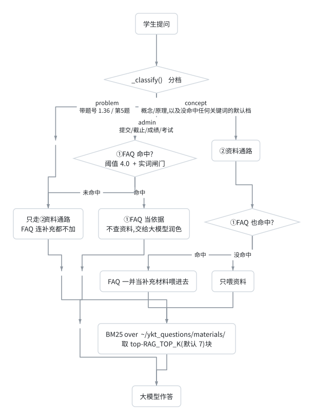
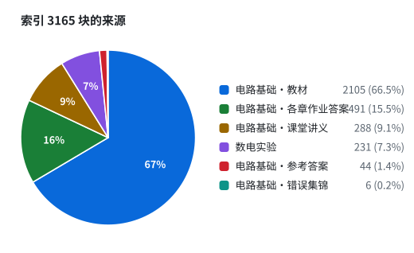
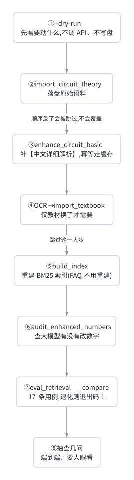

知识库说明(FAQ + 资料库)
建立:2026-09-20 · 起因:新增「电路基础」(张曰理老师)理论课的作业答案与群聊问答 最近一轮:第九轮 —— 文档长出"网页层"(HTML 里有架构图/流程图/时序图/饼图, 不是 markdown 的翻版),外加一次全仓一致性审计。改动清单见 §9.9。 (上一轮 = 第八轮:花名册终于读得出来,顺带撞出"补交表被单测写了 398 行",§9.8)
本文说明 ta-assistant 的知识库有哪些内容、从哪来、怎么重建、边界在哪。 日常运维只需要看第 2 节、第 7 节(含 §7.1 三条"不碰索引"的操作)。
要加一条 FAQ,别手改 txt —— 微信里发 【记录】问题:… 标准答案:…,见 §5.5。
要改截止时间/提交方式这类事务口径,编辑 ~/ykt_questions/课程事务.txt,见 §6.6。
换学期要换花名册,覆盖 ~/ykt_questions/花名册/电路基础理论课_学生名单.xlsx 这个
文件名即可,然后跑一次 python scripts/check_roster.py 确认人数对不对,见 §8 第 12 条。
改动检索相关的东西之前,请先读 §3.6。 那里记着一个反直觉的坑:
rank_bm25 会把"半数以上文档都含"的词的 IDF 兜底成同一个正数,
于是 的/是/原理 这类虚词变成"正证据"、把无关章节顶到正确章节前面。
现在的修法是 apply_lucene_idf(),而且不许用到 FAQ 通路(那会偷偷改掉 4.0 阈值)。
1. 两条召回通路#
ta-assistant 的答疑是两路串联,不是一路:

这张图的源码(想改的话复制这段)
flowchart TD
Q["学生提问"] --> K{"_classify() 分档"}
K -->|"problem<br/>带题号 1.36 / 第5题"| RAGONLY["只走②资料通路<br/>FAQ 连补充都不加"]
K -->|"admin<br/>提交/截止/成绩/考试"| FAQHIT{"① FAQ 命中?<br/>阈值 4.0 + 实词闸门"}
K -->|"concept<br/>概念/原理,以及没命中任何关键词的默认档"| BOTH
FAQHIT -->|"命中"| FAST["① FAQ 当依据<br/>不查资料,交给大模型润色"]
FAQHIT -->|"未命中"| RAGONLY
BOTH["② 资料通路"] --> MERGE{"① FAQ 也命中?"}
MERGE -->|"命中"| SUPP["FAQ 一并当补充材料喂进去"]
MERGE -->|"没命中"| ONLYDOC["只喂资料"]
RAGONLY --> BM["BM25 over ~/ykt_questions/materials/<br/>取 top-RAG_TOP_K(默认 7)块"]
SUPP --> BM
ONLYDOC --> BM
BM --> ANS["大模型作答"]
FAST --> ANS下面是同一张图的 ASCII 版 —— 终端里、
git diff里、以及不渲染 mermaid 的地方看这份。
学生提问
│
├─ 先分档:_classify() → problem / admin / concept ← 2026-09-20 晚新增
│ │
│ ├─ problem(带题号:1.36 / 第5题 / 题10.46)
│ │ → 只查②资料通路,FAQ 连补充都不加
│ │ (问 1.36 时 FAQ 里那条"作业怎么提交"纯属噪声)
│ │
│ ├─ admin(课程事务:提交/截止/成绩/考试/考勤/雨课堂…)
│ │ ├─ ① FAQ 命中 → **不查资料,FAQ 当依据交给大模型润色**
│ │ └─ 未命中 → ② 资料通路
│ │
│ └─ concept(学科概念/原理,以及**没命中任何关键词的默认档**)
│ → ② 资料通路 + ① FAQ 命中则**当补充材料一并喂进去**
│ (概念讲解要能展开,短路会把"讲得更透"一起掐掉)
│
└─ ② 资料通路:RAG,BM25 over ~/ykt_questions/materials/ 下的分块
取 top-RAG_TOP_K(默认 7)块塞进 prompt,由大模型作答
FAQ 命中就短路,不会再走资料通路 —— 所以 FAQ 里写一条不准确的答案, 代价比资料里写错还大,它没有任何"再检查一次"的机会。 (注意"短路"指的是不走资料通路,不是"不调大模型" —— 这句话以前被读歪过,见 §5.4 的勘误。) "带题号就先去查资料"这条规则,是为了不让 FAQ 短路掉具体题目(§5.2.1); "只有事务题才走 FAQ 快路"这条,是为了不让 FAQ 短路掉概念讲解(§6)。
为什么 FAQ 要卡阈值 + 实词闸门:见第 5 节,那里记了一次真实的误召回。
2. 知识库落在哪(以及为什么不是 .env 里配的那个)#
| 东西 | 路径 |
|---|---|
| 业务数据根目录 | /home/jj/ykt_questions/(WSL 里,即 ~/ykt_questions) |
| FAQ | ~/ykt_questions/常问问题.txt |
| 资料目录 | ~/ykt_questions/materials/ |
| 花名册(不是资料,见 §8 第 12 条) | ~/ykt_questions/花名册/ |
| 补交表 | 跟着花名册走:花名册/电路基础理论课_补交表.xlsx(由名单文件名推导,同目录、同课名) |
| 索引文件 | ~/ta-assistant/data/index/bm25_index.pkl(gitignore,不版本化) |
src/config.py 的 WINDOWS_ROOT 默认就是 ~/ykt_questions,.env 里没有覆盖它 ——
也就是说,当前跑的就是默认值,不用改任何配置。
⚠️ 但要注意历史上还有一份旧知识库在
C:\Users\52880\Downloads\ykt_questions\(WSL 路径 /mnt/c/Users/52880/Downloads/ykt_questions/):
- 它里面有数电的
materials/(7 个文件)和一份旧常问问题.txt; - 它不再是运行时读取的那份。2026-09-17 那次实测时,后端在
~/ykt_questions/下 新建了补交表(补交表.xlsx,工作表名补交记录,9 行),说明运行时用的就是~/ykt_questions; - 2026-09-20 本次更新,已把旧库里的数电资料拷贝进
~/ykt_questions/materials/, 两份合流,所以现在运行时那一份是完整的。
docs/design.md / docs/deployment.md 里写的 WINDOWS_ROOT=/mnt/c/Users/.../Downloads/ykt_questions
是旧部署方式的遗留说明,与现在的实际运行状态不一致;真要改回 Windows 侧,得先把
~/ykt_questions/补交表.xlsx 里的补交记录合并过去,不然会丢记录。
3. 资料库里现在有什么#
重建后的索引:114 个文件 / 3165 个分块。 电路基础里教材占 2105 块(全库 67%) —— 是 2026-09-20 晚 OCR 进来的,见 §3.5。
比上一版少 1 个文件、1 块:那份成绩记分册原先躺在
materials/里,被build_index.py当成教学资料解析进了索引(名单不是资料)。已移到花名册/, 见 §8 第 12、13 条。移动前后跑了eval_retrieval.py --compare:17 条用例全中、 0 条回归,§3.6 那张 df 表逐个数复量过,一个都没动(那块里没有那些词)。
分块构成 —— 教材一门就占了三分之二,这也是"概念题答得比事务题好"的底气所在:
精确数字(从实际索引里数的,不是估的;pickle 里 path 按目录归类):
| 来源 | 块数 | 文件数 |
|---|---|---|
| 数电实验(§3.1) | 231 | 6 |
| 电路基础 · 教材(§3.5) | 2105 | 21 |
| 电路基础 · 各章作业答案(含中文详细解析) | 491 | 68 |
| 电路基础 · 课堂讲义 | 288 | 11 |
| 电路基础 · 参考答案(docx) | 44 | 7 |
| 电路基础 · 错误集锦 | 6 | 1 |
| 合计 | 3165 | 114 |
同一份数据画成图(教材一块就占三分之二 —— 这是"概念题为什么答得像教材"的直接原因):

这张图的源码(想改的话复制这段)
pie showData title 索引 3165 块的来源
"电路基础·教材" : 2105
"电路基础·各章作业答案" : 491
"电路基础·课堂讲义" : 288
"数电实验" : 231
"电路基础·参考答案" : 44
"电路基础·错误集锦" : 6教材一块的 21 个文件里,最大的是
教材-第14章-频率响应.md(159 块), 最小的是教材-译者序-符号与国标差异.md(5 块)和附录(48 块)。 (比上一版少 1 块 = 2026-09-20 语料审计丢掉的那张扫描仪元信息页,见 §3.5.1。)
3.1 数电实验(原有,本次只是搬进来)#
原来那份索引里的 7 个文件,分块 232 个:
| 文件 | 分块 |
|---|---|
| 实验讲义2024.pdf | 188 |
| 实验仪器与教学软件的使用_202503.pdf | 16 |
| 数电模电电分复习.docx | 11 |
| 面试--数电.docx | 7 |
| 数电.docx | 6 |
| 实验报告模板(2026).pdf | 3 |
原来这里还有一行「成绩记分册 1 块」,现在没有了。 那份 xlsx 是名单, 不该当教学资料 —— 已挪到
~/ykt_questions/花名册/(§8 第 12 条)。 顺带记一笔:它进索引时其实只贡献了标题那一格(140 个学生一个都没进去), 不是因为有人拦它,而是因为doc_parser用了read_only=True,而那份工作簿的<dimension ref="A1"/>撒了谎 —— 是被同一个 bug 意外挡住的,不是设计。
3.2 电路基础#
由 scripts/import_circuit_theory.py + scripts/enhance_circuit_basic.py 从
C:\Users\52880\Downloads\202509电路理论基础\(张老师课件 + 中文版作业答案)与
C:\Users\52880\Downloads\电路基础课后作业答案\(英文版 Soln)一起生成,
再加上 scripts/import_textbook.py 装配的扫描版教材(见 §3.5),
进索引共 2935 个分块 / 108 个文件(构成见 §3 的表)。六个来源:
| 来源 | 产出 | 说明 |
|---|---|---|
Z第N章 作业题目及答案.pdf(9 份,中文版作业用书) |
materials/电路基础/<章节目录>/<题号>.md |
权威版,56 题 |
65 个 SolnNNNNN.pdf(英文版 Soln) |
同上(同题号覆盖)或独立成篇 | 中文版没布置的 12 题保持独立 |
第N章-xxx.pdf(11 份课堂讲义) |
materials/电路基础/讲义/第N章-<章名>.md |
课堂提纲,概念题的权威依据之一 |
电路基础-中文版-原书第6版（扫描版）.pdf(711 页) |
materials/电路基础/教材/教材-第N章-<章名>.md(19 章 + 附录 + 译者序) |
OCR 出来的教材正文,概念与公式最细的依据;见 §3.5 |
电路理论基础---错误集锦*.pptx |
materials/电路基础/错误集锦.md |
教材勘误,含"此题不用做" |
2-4 / 5-7 参考答案R.docx |
materials/电路基础/参考答案/... |
张老师的中文参考答案 |
| 全部资料清单 | materials/电路基础/00_资料总目录.md |
给人看的,不进索引(见 §3.4.1) |
| 生成清单(可追溯) | materials/电路基础/_manifest.json、_manifest_theory.json、_manifest_textbook.json |
不进索引 |
覆盖章节(作业答案):1、2、3、4、6、7、8、9、10、11、13、14、19 章。 教材则是全书 19 章都有。
关键设计一:每份语料都带一段中文标题头。 原因是英文版原答案是英文的 (Alexander & Sadiku 6th ed. 习题解答),而学生提问是中文 —— jieba 切中文和切英文 是两套词,英文正文里没有「第十章」「作业」「答案」这些词,直接索引的话中文提问 召不回对应片段。所以生成时把中文锚点显式写了进去:
【电路基础 第10章 习题 10.46 参考答案(中文版)】任课老师:张曰理
来源:Z第10第10章 作业答案).pdf(中文版《电路基础》(原书第 6 版)配套作业用书,**参数与结论以本版为准**)
检索:电路基础 作业 答案 习题 解答 参考 中文版 第10章 CH10 10.46 题10.46 详细解析 讲解 ...
【中文详细解析】
...
【原文(核对用,未经改动)】
10.46 ...
【英文版对照(仅参考)】
⚠️ 这是**国际版**教材的解答,**个别题目的参数/单位与中文版不同**(例如公里与英里)。
**数值、单位、结论一律以中文版为准**;本段只用于对照两版差异。
关键设计二:中文版与英文版按"输出路径"合并,中文版是正文。
助教明确要求:国际版与中文版个别题目的参数不同(公里被换成英里),
所以课后题答案以中文版为准。做法是让中文版写到和英文版同一个文件路径
(materials/电路基础/<章节目录>/<题号>.md,例:1第一章/1.36.md)——
路径本身就是合并键,不需要额外维护映射表。于是:
- 中英都有的 53 题 → 一个文件,中文版是正文与结论,英文原文降级成文末的 「英文版对照(仅参考)」块,并写明数值以中文版为准;
- 中文版独有 3 题(11.12、14.0、6.62)→ 只有中文;
- 英文版独有 12 题(第 13、19 章全部,以及 11.2、6.65)→ 原样保留,不动。
冲突处理是"结构性的",不靠提示词自觉。 因为同一个文件里中文在前、英文在注明 "仅参考"的块里,大模型读到两套数字时,优先级写在文件结构里(而且提示词里也钉了一遍, 见 §6)。若反过来靠提示词说"注意别用错版本",迟早会漏。
题号以正文自述为准,不用文件名。 文件名那串数字不可靠:
Soln11012.pdf 对应的正文是 Solution 11.2、Soln13007.pdf 是 Solution 13.7。
脚本先读正文前 120 字符里的 Solution X.Y,读不到才退回文件名,并在不一致时打警告。
中文版切题踩过的四个坑(都在 test/test_split_cn_problems.py 里钉住了):
- 题号正则结尾不能用
\b。Python 的\w把中文也算进去,2.74下图所示电路里4和下都是\w,用\b判词尾会整题漏掉(实测漏掉 2.74)。 改成"后面不能跟数字"。 - 行首的纯数值不是题号。
10.5 V、0.25这类也会落在行首,靠"题号后十几个字里 必须有中文"滤掉。 - 按文件名声明过滤章号。第 10 章的文件里会冒出行首的
3.92、第 11 章里冒13.7(都是引用别题)。用Z第10第10章...里读出的"这份文件只该有第 10 章"一过滤就干净了。 - 同一题号出现多次取正文最长的那段。第 14 章开头有一行"作业题 14.0 … 14.4 …"的清单, pdfplumber 换行后清单项也落在行首,先匹配到的是清单而不是正文;取最长的就自然选中正文。
第 6 章整章写 6-11 而不是 6.11,所以切题时统一归一成点号,
否则中文版的 6-11 就没法和英文版的 6.11.md 合并。
3.3 中文详细解析(2026-09-20 加的 LLM 增强)#
原解析太简略,检索到了也答不了疑。 1.36 题原文全文就两行:
(a) I = 20/0.25 = 80 amps.
(b) days = (20/0.002)/24 = 416.7 days.
学生看不懂 0.25 是哪来的(15 分钟 = 0.25 小时)。所以逐题调大模型,
把英文原解答翻译并展开成中文详细解析,写回同一个语料文件:
【电路基础 第1章 习题 1.36 参考答案】任课老师:张曰理 ← 标题头(检索锚点)
来源:Soln01036.pdf(...)
检索:电路基础 作业 答案 ... 1.36 题1.36 详细解析 讲解 思路 步骤 方法 怎么做 ...
【中文详细解析】 ← 大模型生成,学生看这个
【题目要求】/【已知条件】/【解题思路】/【详细步骤】/【最终答案】
【原文(核对用,未经改动)】 ← 原文一字不动地附在后面
Solution 1.36 ...
生成器:scripts/enhance_circuit_basic.py(抽出逻辑复用 import_circuit_basic /
import_circuit_theory,不重复实现)。75 题全部增强成功,耗时 5 分 51 秒,并发 5。
三类源共用一套缓存,新增源不重复花钱。 缓存键是
sha1(PROMPT_VERSION, kind, 原文),kind 就是命名空间:
| kind | 源 | 本次 |
|---|---|---|
cn-v1 |
中文版作业用书(权威版) | 56 题新生成 |
pdf |
英文版 Soln(中文版没布置的题) | 12 题命中缓存,不重跑 |
docx |
张老师中文参考答案 docx | 7 题命中缓存,不重跑 |
于是加中文版这件事只花了 56 次调用 —— 只有英文版的题(第 13、19 章等)沿用原解析,
它们本来也不该被中文版覆盖。反过来说:有中文版的 53 题必须重新生成,
因为旧解析是照英文版原文写的,数字可能正是错的那一版。改中文版提示词时,
把 kind 从 cn-v1 换成 cn-v2 就能让这部分精确失效。
三条纪律(改脚本前先读):
- 不许改数值。提示词明确要求保留所有数字/单位/结论,原文没写的推导不许补。
- 原文必须原样附在文件末尾。大模型出错时,原文是唯一的事实来源, 助教可以逐行核对。这是"不许删原文"的原因。
- 提示词版本化。改了提示词就 bump
PROMPT_VERSION(或换 kind,如cn-v1→cn-v2)。
文件路径与格式只有一个来源。 import_circuit_theory.py 定义 Spec(写去哪、
标题头、正文、文末附加块)和 render();增强脚本不自己拼文件内容,而是调
render(spec, 中文解析)。这样重写文件时不可能漏掉英文对照块 —— 它压根不自己拼。
_collect_jobs 里也据此跳过被中文版覆盖的英文题号,否则两个 job 会写同一个文件、
谁后写谁赢。
中文版原文的两种 PDF 失真,提示词里明确交代了(只在解释里还原,不许动数值):
- 上下标被甩到下一行:正文写
R 、R 、R,下一行是1 2 3,实为 R₁、R₂、R₃; - 公式符号丢失:如 4.15 原文
p = i2R = (1.875)23 = 10.55w,实为p = i²R = (1.875)²×3。
实测 4.15 的中文解析主动报出了原文的一处不一致:"原文此处 13/2 与上一行 13/3 不一致, 且按 13/2 代入得不到 3/8,疑为抽取失真或笔误;按上一行 13/3 理解…与原文结论一致, 请对照作业册"。这种"照实说不确定"比编一个通顺解释有价值得多。
数字保留审计(每次增强后都要跑):
./.venv/bin/python scripts/audit_enhanced_numbers.py --context。
把原文里所有"有意义的数字"(≥3 位或带小数点)抠出来,逐个查是否出现在中文解析里。
本次结果 75 份中 69 份数字全部保留,剩 6 份逐条人工看过,没有一处是大模型改错:
| 类型 | 例子 |
|---|---|
别题的题号(图注 For Probs. 19.18 and 19.37) |
11.12 19.37 10.60 |
PDF 丢了上标 → 10⁹ 变 109 |
109(8.883x109) 103 |
| PDF 把分数/乘号拍平 | 7030(=70∥30) 205(=20∥5) 22.5(=ω²2.5) |
| 纯精度差异(不是错误) | 原文 13.51342 – j48.9189 → 解析写 13.513 - j48.919 |
| MATLAB 输出表格被概括 | 13.11 的 1.0e+003 * 0.2000 + 1.2000i |
审计脚本自己也修过一处盲区:中文版题的原文后面跟着「英文版对照」块,而两版 数字本就可能不同 —— 原来把英文那段也算进"原文",于是"中文解析里没有英文版独有的数" 全被报成缺失,把真正该看的几行淹没了(57 份"可疑" → 修好后 6 份)。 现在按
【英文版对照(仅参考)】截断,只审中文原文。 同理,讲义/与错误集锦.md本来就不该有解析,已从审计范围里排除。
最后一条特意核过:13.11 的中文解析写 I1 = 0.1390 − j0.7242 A、I_x = 0.4619∠−80.26°,
与原文 I = 0.1390 - 0.7242i、461.9cos(600t–80.26˚) mA 一致 ——
说明是读出来的,不是模型自己算的。
能力边界:题图是图片,大模型看不到。提示词要求它在该处注明 "(此处依赖题图,请对照作业册或原始 PDF)",禁止凭空描述电路长什么样。 实测 9.67、13.11 等题都正确写了这句。想让它能讲图,得先做 OCR/视觉方案(见 §8)。
3.4 检索:锚点必须复制进每一块,不能只放第一块#
这是增强之后暴露出来的、比"内容简略"更隐蔽的问题(2026-09-20)。
学生问「电路基础第一章作业的1.36怎么做」,修好 FAQ 截胡后资料通路终于被调用了, 可模型回答的却是"资料里只有题目,没有收录解题步骤"。查分块得分,真相是:
1.36.md 的分块 |
得分 |
|---|---|
| 第 0 块(锚点行 + 题目要求) | 20.77 ← 只有它带着 检索: 锚点行 |
| 第 1 块(已知条件) | 2.27 |
| 第 2 块(详细步骤) | 0.00 |
| 第 3 块(最终答案) | 5.90 |
| 第 4 块(英文原文) | 0.00 |
于是 top-5 被别的文件的第 0 块占满(它们都含「电路基础/作业/答案/第N章」, 各得约 12.5 分),模型只拿到"题目要求"。检索没召回解答,再详细的内容也没用。
修法:src/rag/indexer.py 里把文档开头的 检索: 锚点行复制进每一块。
副作用是好的 —— 锚点里的通用词(电路基础/作业/答案/习题)因此在所有块里都出现,
IDF 自动趋近 0,真正有区分度的题号反而更突出。修完的得分:
1.36 问:top-5 = 19.49 / 17.20(目录) / 16.14 / 15.49 / 15.17 ← 4 块都是 1.36.md
10.46 问:top-5 全部来自 10.46.md
同一次还调了 RAG_TOP_K:5 → 7。一份电路基础语料的分块数中位数是 5、最长 11,
只取 5 块会把同一条解答的后面几块切掉(实测问 10.46 时模型只拿到前两问的推导,
如实回答"第三项资料未给详细步骤")。取 7 能覆盖 93% 的题目文件(68/73)。
_anchor_of() 只认文档开头 400 字符内的 检索: 行,避免误抓正文深处偶然的同名文字;
数电的原始 PDF 没有锚点行,行为完全不变。
⚠️ 这个"好的副作用"有个上限,教材进库后被撞到了。 同一套机制在作业答案上有效 (通用词被摊平、题号突出),但教材的锚点里除了通用词还有一串通用词尾巴 (
定义 概念 原理 定理 公式 推导 讲解 详解 怎么理解 为什么)—— 它们被复制进每一个教材分块,等于给全部 19 章同时发了一张"什么都能答"的通行证。 真正的代价不在尾巴本身,而在当时原理这类词的 IDF 被兜底成一个正数(1.70): 见 §3.6。结论:锚点复制这个机制没错,但"往锚点里多塞词"不是免费的。
3.4.1 目录/清单类文件不进索引(2026-09-20 晚)#
加完讲义后复测,发现每个问题的第一名都是 00_资料总目录.md:
| 提问 | 00_资料总目录.md 得分 |
本该命中的文件 |
|---|---|---|
| 什么是叠加原理 | 13.6(第 1 名) | 第4章-电路定理.md 第 11 名 |
| 作业里的叠加定理怎么理解 | 15.0(第 1 名) | 第4章-电路定理.md 第 18 名 |
| 教材上哪里有印错的地方 | 16.2(第 1 名) | 错误集锦.md 第 9 名 |
原因是结构性的:目录里列着每个题号和章节名,于是任何带题号或章节词的提问
它都能拿高分 —— 而它的正文只是一份清单,对回答毫无营养,还占掉 7 个名额里的 1 个。
修法:_iter_files() 里跳过 00_ 开头(人工目录)和 _ 开头(生成清单)的文件。
它们是给人看的,不是给人问的。改完 1064 → 1061 块,第一名全部还给真正的资料。
3.4.2 锚点里要写上学生的说法,不能只写书面语#
同一批复测里暴露的第二种失败:问「教材上哪里有印错的地方」,错误集锦排第 9、
大模型答"我这边没有拿到那份清单的内容";把问法换成「教材哪里印错了」,同一份资料
排第 2。一模一样的意图,一个答得上一个答不上 —— 因为锚点里写的是
印刷 错误 勘误,而学生说的是 印错。
修法:错误集锦的检索行补上口语句式(印错 印错了 写错 错字 哪里有错 哪里印错
教材错误 书上错了)。改完同一问的得分:
错误集锦.md 26.24 / 25.05 / 23.47 / 23.28 / 21.49 / 21.08 ← 前 6 名全是它
同理给讲义锚点补了 作业 习题 两个词:学生问「作业里的叠加定理怎么理解」时,
讲义原本一个词都对不上这两个字,只能靠"定理"勉强挤进前 20;补完后
「什么是叠加原理」那一问里第4章-电路定理.md 从第 11 名升到第 8 名。
教训:锚点是手写的同义词表,它的价值全在"覆盖学生真实的问法"。 每遇到一次"资料明明在库里却答不出",先看分块得分,再看锚点缺了哪个词。
2026-09-20 晚补的第五条证据(教材上线的副产品)。 学生问「虚短和虚断是什么意思」,
而教材正文里根本没有"虚短""虚断"这两个词 —— 全 19 章 grep 下来只在
教材-第5章-运算放大器.md 里各出现 1 次,而且都在我注入的锚点行上,正文一个都没有。
教材(译本)的说法是"开环增益无穷大""输入电阻无穷大"(第 166、171、736 行)。
也就是说:CONCEPTS[5] 里写 虚短虚断,是唯一让第 5 章能对这个问题召回的机制。
去掉它,这一问就只能靠大模型的通用知识答。
顺带确认了这个机制不会假装成功:召回的第 5 章分块里并没有解释这两个词, 所以大模型照实说了「下面这版讲法是通用教材知识,供参考;教材第5章(从P134起)专门讲 运算放大器,可以对照着看」—— 该收的声明收了,该给的页码给了。 锚点负责"召得回",不负责"块里真有答案";后者由提示词第①档的声明规则兜住。
3.5 扫描版中文教材(OCR 进库,2026-09-20 晚)#
电路基础-中文版-原书第6版（扫描版）.pdf(711 页 / 266 MB)一直是唯一一个
"资料就在手里但进不了库"的东西。它是纯扫描件:每页一张 1904×2944 的图
(Pdg2Pic + FreePic2Pdf 生成),get_text() 全文只有 115 个字符(还是元数据里的书名)。
pdfplumber 一个字都抽不出来,所以 §4 一直把它记成"排除项"。
现在它进来了:21 个文件 / 2105 个分块,索引从 1061 涨到 3166 块(教材占 66%)。
| 产出 | 内容 |
|---|---|
教材-第N章-<章名>.md(19 份) |
全书正文,每章一个文件 |
教材-附录-奇数编号习题答案(P670-P695).md |
书后附录,只有最终答案没有过程 |
教材-译者序-符号与国标差异.md |
导线交叉处有没有黑点的含义与国标相反,学生照国标读图会读错 |
引擎:RapidOCR(ONNX),不是因为效果好,是因为别的走不通。
服务器 sudo 要密码 → apt install tesseract-ocr 直接没戏;RapidOCR 是纯 pip 依赖、
自带中英文模型、CPU 就能跑,中文识别明显好过 tesseract-chi_sim。
711 页 12 进程跑 47.9 分钟(约 3.2 秒/页),结果 743,562 字符。
DPI 用 300,是量出来的不是拍的。 实测 200 DPI 相比 300 DPI:
正文行一行不少,只是少数公式碎片会丢(β=、M、-j20、WM),
而耗时只省 15%(55s vs 65s/页)。省这点时间换公式碎片不划算,所以留 300。
三个必须记住的设计点:
- 书前 16 页(封面/版权/出版者的话/译者序/前言/作者简介/目录)不进正文。 目录页尤其:它列着全部章名和页码 —— 正是 §3.4.1 说的那种"谁提问它都高分"的清单。 封面、版权页、作者简介同理。
印刷页 = PDF 页 − 16。 这个偏移错了,答案里引用的"教材 P188"就会指到别的题上去 (错误集锦写的就是书上页码)。偏移是三个独立来源交叉验证出来的 —— 书前页的罗马 数字(PDF 12→XI、16→XV)、正文书眉(PDF 19/20/21 印着 3/4/5)、目录里写的章节起始页 —— 而且import_textbook.py会逐页用书眉自查,不一致的页在结尾报出来。 全 711 页跑下来零不一致(_manifest_textbook.json里bad_page_headers是空数组)。- 每页开头插
[教材 P{印刷页}]标记。 这是教材比讲义强的地方:讲义是 PPT 导出, 没有页码;教材有页码,大模型才能答"教材 P188 这道题印错了",学生翻书能直接对上。
文件名必须带 教材- 前缀,这不是洁癖。 讲义/ 里的文件名格式一模一样
(第1章-基本概念.md、第4章-电路定理.md…与教材章名逐字相同),而索引里的 source
字段只存文件名不含目录 —— 不加前缀,学生看到「参考:第4章-电路定理.md」就分不出
那是课堂 PPT 还是教材正文。test/test_import_textbook.py 里有一条测试专门钉住这个不重名。
踩到的两个坑(都已修,并留了测试):
- 译者序取错了页。 原本写
TRANSLATOR_NOTE_PDFS = (4, 5),但 PDF 4 是 「出版者的话」(讲这套丛书的历史,与电路无关),PDF 5 才是「译者序」。 产出物开头是"出版者的话"却在标题里自称"符号与国标差异" —— 一个自称讲 A 实际是 B 的文件比没有文件更糟,大模型会拿它去答符号问题。改成(5,)。 - 书前页算出了负页码。 书前 16 页用罗马数字页码,套
pdf − 16得到[教材 P-12], 学生按它翻书永远翻不到。修法:书前页一律不加页码标记,并抽成_translator_note()单独可测(test_translator_note_never_gets_a_negative_page_marker)。
概念词进锚点是手写的,不是从正文自动抽的。 --report-sections 试过自动抽节标题,
噪声大到不能用 —— 正文里公式行、图注也长成 3.4 xxx 的样子,抽出来有
1.6 X10- = 25 000(V) 4 这种;而且真的节会漏(1.8 解题方法、3.6、3.9 都没抽到)。
所以 CONCEPTS 是按书的目录人工核对写死的,并有一条测试禁止把
「本章小结」「复习题」「PSpice」这类结构性标题混进去(它们没有检索价值)。
OCR 出来的公式是乱的,这一点必须让学生知道。 正文识别得很准,但公式、上下标、矩阵
常有乱码(如 C = εA/d 变成 C= EA d)。所以提示词里加了一条:引用教材时说清页码,
看到明显不成句的公式就照实说"这里 OCR 得不清楚,请对照教材 P某页",不要猜一个看起来
通顺的公式。附录那种"只有答案没有过程"的也同理,锚点里已经把这件事写明了。
3.5.1 教材语料审计(2026-09-20 深夜,教材上线后立刻做的)
教材一进来就占了索引 66%,所以它不是"多加了一份资料",而是重新定义了整个检索环境。 于是先做了一轮审计:先量现状,再决定改什么,没有凭感觉动。三件事,两改一不改。
① 扫描仪元信息页 —— 删掉。 OCR 结果里有 1 页全是 SS号、页数、扫描日期
这类扫描软件写进去的字段。它跟目录页、00_*.md 是同一类东西:一段谁提问都能命中的清单,
而且它落在某一章的正文里,会以"教材第 N 章"的身份被引用出去。整页丢弃,索引少 1 块
(2106 → 2105,也就是 §3 表里那个差 1)。
② Ω 被 OCR 认成 Q —— 按上下文改回来,1932 处。 这是本轮最值得修的一条:
电阻单位写错等于把题改了。修法是只认上下文,不做全库替换 ——
正则 (\d(?:[kKmMμnGgTt])?)Q(?![0-9A-Za-z值点参因品]) 要求
"数字(可带 k/M/m 等倍率前缀)+ Q + 后面不是字母/数字/汉字",
这样 5Q→5Ω、2.2kQ→2.2kΩ,而 Q 点(三极管/逻辑里的 Q)、Q值、品质因数Q
一个都不会被误伤(负向断言里那几个汉字就是为它们留的)。
含 Ω 的分块从 999 涨到 1125。改动处数记在 _manifest_textbook.json 的
ohm_symbol_fixes 里,可追溯。
③ 页码标记只覆盖了 35.8% —— 修到 99.7%,这条最影响可用性。
[教材 P{印刷页}] 是教材相对讲义唯一的优势(讲义是 PPT 导出,没有页码)。
第一版只在这一页"看起来像是新的一页开始"时才插标记(靠书眉),结果 2106 块里
只有 754 块带页码 —— 学生看到"教材 P188 有讲"却翻不到,等于这个优势没兑现。
改成逐页传递:标记跟着 cur_page 走,每一块都继承它所在页的页码。
覆盖率 754/2106(35.8%)→ 2099/2105(99.7%)。
剩下 6 块没页码,全部有明确原因,不是漏:
| 例外 | 块数 | 为什么合理 |
|---|---|---|
教材-译者序-符号与国标差异.md |
5 | 书前页用罗马数字页码,套 pdf − 16 会得到负数,按 §3.5 的坑一律不加(留有测试) |
| 附录的标题块 | 1 | 那一块只有附录标题本身,还没进正文,原书也没给页码 |
一个已知的外观瑕疵:附录文件名仍叫
教材-附录-奇数编号习题答案(P670-P695).md, 而 P695 那页(就是上面删掉的扫描仪页)已经不在库里了。故意不改名 —— 文件名进了索引source字段、进了基线 JSON、也被学生的历史对话引用, 为了对齐一个页码去重命名,换来的是一致的假象而不是一致。记在这里,不修。
3.6 BM25 的 IDF 兜底:虚词被当成"正证据"(2026-09-20 深夜)#
症状。 用户验收过的提问「什么是叠加原理」,第 4 名才是 教材-第4章-电路定理.md
(13.47 分),而 教材-第5章-运算放大器.md(13.53 分)、教材-第17章-傅里叶级数.md
挤在它前面。"运算放大器"和"叠加原理"没有任何关系 —— 这不是"排序不太好",是错的。
根因是库的兜底,不是语料。 rank_bm25.BM25Okapi 算
idf = log(N - df + 0.5) - log(df + 0.5):词出现在半数以上分块里时这个值是负的,
而它把负数统一兜底成 epsilon × average_idf(epsilon = 0.25)。实测本库:
| 词 | df(共 3165 块) | 旧 IDF | 换 Lucene 后 |
|---|---|---|---|
的 |
2959 | 1.6994 | 0.09 |
怎么 |
2595 | 1.6994 | — |
是 |
2453 | 1.6994 | — |
原理 |
2401 | 1.6994 | 0.28 |
叠加(真关键词) |
38 | 4.40 | 4.41 |
叠加定理 |
225 | 2.57 | 2.64 |
关键在于:原理 和 的 的权重一模一样,而且是个正数,只比真关键词 叠加 小 2.6 倍。
于是「什么是叠加原理」里的 什么+是+原理 给每一章白送 7.3 分
(实测第 5 章那块 13.53 分里 7.3 分来自这三个词)。
"什么词都匹配"变成了正证据,这才是"无关章节挤进 top-7"的机制。
而 §3.5 提到的锚点通用词尾巴(定义 概念 原理 定理 公式 推导 讲解 详解 怎么理解 为什么)
把这个效应放大了:那串词被复制进每一个教材分块,等于给全部 19 章
同时发了一张"什么都能答"的通行证。教材一进库,这个尾巴的代价才第一次变明显。
修法:换成 Lucene 的 IDF 写法 log(1 + (N - df + 0.5) / (df + 0.5)) ——
单调递减、恒为正、不兜底。见 src/rag/retriever.py:apply_lucene_idf。
效果是"稀有词不被削、常见词被压平",正是 IDF 该干的事。
为什么不清零。 清零(把常见词直接踢出打分)会让"问句只由虚词组成"时全库 0 分、 一条都召不回 —— 比噪声更糟。Lucene 版留了很小一点权重,排序意义不变而噪声基本消失。
为什么不在 load() 里"顺手也修一下 FAQ"。 FAQRetriever 的 4.0 阈值就是按旧 IDF
标定的,换公式等于偷偷改阈值:实测「这周电路基础有作业吗」5.11 → 1.88、
「Proteus 在哪下载」5.48 → 3.03,真命中会掉到阈值以下、FAQ 通路直接哑掉。
FAQ 那边解决同一个问题靠的是"实词闸门"(_FAQ_STOPWORDS),不是改打分。
test/test_idf.py::test_faq_retriever_keeps_the_original_idf 专门钉住这条边界。
装载时也会修一遍。 老索引 pickle 里存的是旧 IDF。BM25Retriever.load() 里也调
apply_lucene_idf,所以不重建索引也能去掉虚词噪声;重建是为了让磁盘上的那份也干净。
(这条有个副作用值得记:拿"修复前的索引"做突变测试测不出差别 —— 装载时被修好了。
第一次跑突变测试就因为这个假绿,后来改成"旧索引 + 注释掉装载时的调用"才复现出失败。)
效果(实测,不是估的)。 17 条用例命中 17/17、MRR 0.956 前后不变, ch4/ch5 的名次反转被纠正。但要如实说清楚:严格表上的"无关教材章"总数只从 8 条降到 7 条, 没有归零。剩下的跨章命中是真正的词形匹配,不是打分的锅:
- 第 17 章讲傅里叶级数时用的"叠加"是谐波叠加,词同一个、意思不同;
- 第 10 章(正弦稳态)里有交流电路里的戴维南等效/叠加应用,算相关章,已写进
allow_ch; - 第 5 章那块是正文顺带提到 —— 词形匹配解决不了,记作已知残留。
表里后来又从 7 条降到 4 条,那是逐条核对 allow_ch(把"确实相关的章"正名)的结果,
不是打分变好了。这个区别必须分清,否则下次会以为"再调调 IDF 还能降"。
4. 有这几类文件被故意排除了(不是遗漏)#
import_circuit_basic.py 里用 KNOWN_SKIP 逐个写明原因,每次运行都会打印。依据都是实测:
| 文件 | 为什么不要 |
|---|---|
~~电路基础-中文版-原书第6版(扫描版).pdf(266 MB,711 页)~~ |
~~纯扫描件,没有文本层~~ → 2026-09-20 晚已 OCR 进库,见 §3.5 |
Fundamentals of Electric Circuits (4th Ed.) Solution Manual*.pdf(两份,各 1972 页) |
版次不符。作业用的是第 6 版(单题解答页脚是 Copyright © 2017),这两份是第 4 版,题号会串。实测在 4th 手册里搜不到 Solution 10.46。照它答会答错题 |
| 英文教材正文(993 页/1.7M 字符) | 英文正文对中文提问几乎无召回,1.7M 字符还会把 BM25 结果稀释掉。不是不能加,是要加就得先给它配中文小节标题(见第 8 节待办)。中文版教材 OCR 进库后,这一项的必要性进一步下降了 |
微信图片_20251011164912_70_519.jpg |
src/utils/doc_parser.py 不支持图片,无 OCR |
00_*.md / _*.md |
人工目录与生成清单,不进索引(理由见 §3.4.1)。注意"排除"发生在索引阶段而不是导入阶段 —— 文件仍然生成,人还能翻 |
教训:一个"看起来全是资料"的目录,直接整个 rglob 进索引是危险的。 版次不同的答案手册比没有答案更糟 —— 它会自信地给出错题的解答。
另一条教训(扫描版教材那条):"排除"这个结论要写清依据,也要定期回头看。 当初记的是"没有文本层,要索引必须先 OCR" —— 依据没错,但"先 OCR"这个前提 后来被当成了"做不到"。真正卡住的从来不是可行性,是没去量 OCR 的成本(实测 48 分钟)。
5. FAQ 文件:格式、阈值,和一次真实的误召回#
5.1 格式#
~/ykt_questions/常问问题.txt,条目间空行分隔;解析器是
src/rag/retriever.py 的 _parse_faq():
Q:
<问题,可以多行>
A:
<答案,可以多行>
Q:
...
文件开头可以写注释(解析器遇到 Q: 之前的内容会跳过)。
不要在答案里出现行首的 Q:。当前 37 条:数电 7 条 + 电路基础 30 条。
5.2 阈值与"实词闸门"#
FAQ_HIT_THRESHOLD = 4.0。2026-09-20 加了第二道闸门,原因是实测踩到的假召回:
加入电路基础 FAQ 后,什么是竞争冒险(数电概念题)以 4.83 分命中了
电路基础作业的截止时间是什么时候? —— 因为中文疑问句里 是、什么、的
几乎每句都有,BM25 就被这些虚词凑够了分。FAQ 命中会短路掉资料通路,
于是学生会拿到一份"作业截止时间"去回答"什么是竞争冒险"。
第一次修法是错的,记在这里免得再走一遍:把停用词从打分里删掉。
结果虚假命中没了,但真实命中一起掉到阈值以下 ——
这周电路基础有作业吗 5.11 → 1.88、Proteus 在哪下载 5.48 → 3.03。
因为 4.0 这个阈值本来就是按原分词标定的,动分词等于偷偷动了阈值。
现在的做法:停用词只当闸门,不参与打分。 打分照旧(原 jieba 分词,阈值含义不变),但要求命中的那条 FAQ 至少共享一个实词;一个都不共享就当作没命中,退回落 RAG。 实测:真命中分数一分没变,假命中归零。
scores = self.bm25.get_scores(list(jieba.cut(query))) # 打分:原分词
q_content = _faq_content_tokens(query) # 闸门:只留实词
if not (self.content_tokens[i] & q_content): # 无实词交集 → 不算命中
continue
停用词表在 src/rag/retriever.py 的 _FAQ_STOPWORDS,加了 这/那/这题/那题 这类
指代词(它们没有话题信息,但 那题 曾让 10.46 那题怎么做 误命中 1.23 那条 FAQ)。
这道闸门原来有两条"测试",但它们永远不会红 —— 2026-09-20 深夜才发现。 原因很隐蔽:测试只用一条 FAQ 语料,而
rank_bm25对 df > N/2 的词的 IDF 兜底是epsilon × average_idf;单条语料下average_idf是负的,兜底值也为负, 分数会被scores[i] > 0先滤掉 —— 要复现的病根本没机会出现。 现在的做法是两段式:test/test_faq.py里搭一份合成的多篇语料把病造出来, 再拿真实的常问问题.txt钉住那个被记录下来的假命中。 并且做了突变测试:把闸门删掉,两条测试必须红 —— 红了才算真测试(§9.6)。
5.2.1 实词闸门拦不住的那种截胡:带题号就先去查资料#
闸门只挡"纯虚词凑分"。但下面这种情况它挡不住,因为两边共享的确实是实词:
学生问:电路基础第一章作业的1.36怎么做？ ← 2026-09-20 用户实测报的这个
FAQ 命中:电路基础理论的作业怎么提交？要交给学委吗？ 得分 5.61(阈值 4.0)
电路/基础/作业/怎么 四个实词两边都有,于是 FAQ 命中 → 短路掉资料通路 →
学生拿到"作业在雨课堂提交",外加一句"这个我不确定"。
而 1.36 的解答就在知识库里(检索得分 19.49)。
根因是 FAQ 通路的前提「FAQ 命中就不必查资料」在具体题目上不成立: 「电路基础+作业+怎么做」这几个词,既属于"怎么交作业",也属于"这题怎么做"。
规则改成:提问里带题号 → 认定问的是具体题目 → 先查资料,FAQ 只兜底。
判定正则 _PROBLEM_REF 在 src/handlers/qa.py,能认出 1.36 / 第5题 / 题10.46。
必须既准又稳,两类误判都有代价,所以专门有回归测试 test/test_problem_ref.py:
| 判成"问题目"(该查资料) | 判成"普通问题"(该走 FAQ) |
|---|---|
1.36 怎么做 第5题的参考答案 第一章 1.23 的答案 |
作业怎么提交 这周有作业吗 雨课堂怎么加入 |
10.46 那题怎么做 题10.46怎么解 |
第1次作业没交("第N次"不是题号) |
1.23 最后是算电还是电费 |
2026-09-20 的作业(日期不能当成题号) |
最后两条是重点:第1次作业没交 若被误判成"问题目",补交登记就会被推去查资料;
2026-09-20 若被误判,任何带日期的提问都会绕开 FAQ。
副作用(是好的):
1.23最后是算电还是电费以前命中那条窄 FAQ,只回答电费那一点; 现在走资料,学生拿到的是完整解答。这正是 §8 旧限制 #4 的解法。
同一天晚些时候又往前走了一步:FAQ 快路(命中就不查资料)现在只留给事务题,
概念题即使命中 FAQ 也照常查资料,把 FAQ 当补充材料一起喂进去。
原因是概念题要能展开讲解,短路会把"讲得更透"一起掐掉。见 §6。
分档判据 _classify() 收在 src/handlers/qa.py,回归测试 test/test_query_kind.py。
5.3 脱敏规则(重要,新增条目前先读这段)#
本次从两份微信群聊记录里提取问答,公开规则是:
- ✅ 可以出现:
张曰理(任课老师姓名)、mcdl(助教网名) - ❌ 必须脱敏:其他所有同学的姓名与网名
具体处理:
| 情况 | 处理 |
|---|---|
| 群里的学生真实姓名(19 个) | 一律不写进 FAQ;确实需要指代时用「某同学」 |
| 群里的学生网名/昵称(约 26 个) | 同上,一律不写 |
| 2 班未加雨课堂的名单那一条 | 整条丢掉(它是点名用的,不是问答) |
| 学生自我介绍 + 点名舍友的那一段 | 整段丢掉(纯身份信息) |
| 助教真实姓名(群昵称里带) | 用 mcdl 代替 —— 白名单只放行了网名 |
| 旧数电 FAQ 里出现的「某同学姓名 + 学号」 | 改为「某同学」(已脱敏) |
| 旧数电 FAQ 里的另一位助教姓名、另一位老师的姓名 | 改为「另一位助教」「任课老师」 |
⚠️ 连"举例说明脱敏了什么"也不要写出真名。本文档初稿在这里列了被删掉的具体姓名, 等于换个地方又公开了一遍 —— 已在 2026-09-20 改掉。要记录就得记成上面这样的类别描述。
顺带修掉了仓库里的一处同类问题:deploy/openclaw/…/SKILL.md 的"手工自检"示例
原本用的是一组真实姓名 + 学号,已换成 测试同学 20259999999。
注:
~/ta-assistant/data/logs/2026-04.log和.claude/settings.local.json里也有这组 真实姓名学号,但它们在.gitignore里(不进版本库),且日志本身就是业务记录的用途,未改动。⚠️ 黑名单扫一遍 ≠ 干净(2026-09-20 实测)。 那天做全库脱敏扫描,结果报"0 命中"—— 但那是假的安全感:名单本身漏了一位同学,是顺着
.claude/settings.local.json里 一条历史批准记录才发现黑名单不全的。denylist 只能证明"已知的这些没有",证明不了"没有"。 补全之后重扫,tracked 文件里的真实姓名/学号确实是 0 —— 而真正让它成立的是另外两条: ① 名单/记分册/补交表本体绝不进版本库(查过,工作树里一个都没有); ② 允许出现 PII 的只有被 gitignore 的文件(data/logs/、.claude/settings.local.json)。 所以以后做这类检查,先确认"名单类文件有没有混进会被提交的目录",再看黑名单。 扫描时也只打印位置、不打印命中内容 —— 姓名学号本身不该被复述到任何地方。
5.4 勘误:"FAQ 快路"快在不查资料,不是"不调大模型"#
一句话:事务题命中 FAQ 时,系统跳过资料通路、仍然调大模型润色。
这条本来不值得单开一节,但四份文档同时写错了,而且错得方向相反 —— 照错的写去"修",会修出一个事务答复直接裸奔的快路:
| 文档 | 原来写的 |
|---|---|
| 本文 §1 的流程图 | FAQ 命中 → 直接发答案,不调大模型(唯一的快路) |
design.md §2.2 / §3.4 |
事务题 + FAQ 命中 → 直接发 FAQ 答案,不调大模型 |
requirements.md F-4 |
直接发 FAQ 答案、不调大模型 |
wechat_end_to_end.md |
FAQ 快路(命中就不调大模型) |
代码里从来没有这个 return —— qa.py 那一段只是把 context 换成 FAQ,
往下走照样 llm.chat(...)。注释和文档说的是一回事,代码是另一回事,而且没人会发现:
两种行为在回执上长得一模一样。
那到底该补 return 还是该改注释?量过再定的:
拿 28 条能自命中的事务类 FAQ 逐条走真实通路,比对"FAQ 原文里的数字"和"模型答复里的数字"
(scripts/eval_admin_fidelity.py,会真调 API):
| 结果 | |
|---|---|
| FAQ 里有、答复里丢了的数字 | 0 条 ← 这才是"失真",它是 0 |
| 答复里多出的数字 | 18 条(逐条看过上下文,见下) |
"丢 = 0" 是关键:28 条里没有一条把 FAQ 的事实弄丢,所以保留润色的决定成立。
⚠️ 但结论不能写成"数字原样不动" —— 我第一版就是这么写的,是错的。 那 18 条里,数字确实会被改写。分三类:
类 例子 性质 ① 同义换算 / 写法归正 零→ 0、「一周」→「七天」、「十」→10语义没变,只换了写法 ② 中文数字当普通字用 「一下」「一起」「对不上」 误报,本来就不是数字(比对脚本的固有噪声) ③ 模型自己补的 「打印到 A4 纸」、举例「 10.46怎么做」不在助教审过的口径里 准确的说法是:润色不丢信息(28/28),但会增补 —— 而增补的东西不受口径控制。 第 ③ 类就是下面那条观察项的一般形式。
所以保留调用,只把注释和这四份文档改对。
⚠️ 但那不等于"润色可以随便加东西"。 2026-09-20 晚在 OpenClaw 侧做自检时看到过一例: 问「Proteus 在哪下载?」(FAQ 里有这条),答复里多带了一个微信公众号文章的链接 —— 那是模型从自己的知识里补的,FAQ 原文没有。链接本身未必有害,但它不在助教审过的口径里。 这是"润色"和"自由发挥"的边界,现在只靠提示词约束(事务类不许用自己知识补充一个字), 没有机制去挡。记在这里,留作观察项。
这条不进单测,因为它验的是模型的输出,不是代码逻辑 —— 单测里那个"模型"是桩,桩不会改写数字。要复核就手动跑上面那个脚本。
5.5 助教自己在微信里加 FAQ:【记录】#
在这之前,加一条 FAQ 只有一条路:开编辑器手改 常问问题.txt。
那份文件没有版本库兜底、没有格式校验、写错一个行首 A: 就会把条目截成两半,
而且改完没有任何反馈。【记录】就是给这件事补的入口。
【记录】问题:仿真软件 Proteus 在哪下载?
标准答案:课程群文件里有个压缩包,解压后按说明装。
回执 ✅ 已记录,FAQ 现在能被检索到 38 条,或者 ❌ 没记: <为什么>。
四条设计约束,针对的都是"错了很难查"的那类错:
| 约束 | 为什么 |
|---|---|
| 拒收时一个字节都不写 | 每条拒收路径的测试都断言"文件内容未变"。"写一半"比"没写"糟得多 |
| 拿不准就拒,让助教重发 | 两条粘在一起、答案里有行首 A: —— 猜错的代价是一条内容错位的 FAQ 被安静地写进去:学生问 A 拿到 B 的答案,谁都不会发现 |
| 写前读、写后回读校验,不过就按原字节回滚 | _parse_faq 是行首 Q:/A: 驱动的,写进去的东西未必读得出来;不校验等于把"写成功"当成"写对了" |
| FAQ 文件不存在就拒,绝不自动创建 | 路径配错时"自动创建"会造出一份空 FAQ 并从此安静地分流,比报错难查得多 |
拒收的四类:含个人信息(8 位以上连续数字 / 花名册里的姓名)、太长(问题 >200 字、答案 >1000 字)、 格式拿不准、与现有条目重复(近乎重复则写进去但在回执里提醒)。
回执里不复述正文:提到学号只会说"问题里有学号(共 11 位)",不把号码打回去; 日志同理,只记
reason=。拒收的理由就是"它不该被留痕",再回显一遍等于白拒。 已知未做:process_input那条日志仍会记原始输入,所以被拒的记录正文仍会进日志; 并发写有竞态(助教不会并发,同requirements.mdR-4)。
"立刻生效"不是"大概会生效",是测过的。 FAQRetriever 每次调用都重新读文件,
没有常驻缓存,所以记完不用重建索引;test_record.py 里有一条测试就是
"记一条 → 用真 FAQRetriever 查 → 必须 top-1 且过阈值"。
⚠️ 写这条测试踩到一个坑,值得记下来:测试语料必须按生产规模搭。 最初用 3 条 FAQ 的小语料,自命中只有 1.02 分(阈值 4.0),测试假红。 原因不是功能坏了,是 BM25 的 IDF 随语料条数 N 变化 —— 语料太小,分数整体就低。 实测真文件(37 条):自命中最低 10.75、中位 25.44,全部过阈值。 所以 fixture 改成 40 条,并且把量出来的数字写进测试文件里 —— 免得以后有人靠"调低阈值"把这个假红修掉(那会把真命中一起放进来)。 一条假红比没有测试更糟:它会诱人去改对的东西。
实现与部署:
| 位置 | 内容 |
|---|---|
src/handlers/record.py |
解析 / 四道检查 / 原子追加 / 回读回滚。handle() 返回 {"type": "record", …} |
src/main.py |
闸门在学生转发闸门之前;顺序反了会被判成"非学生消息"丢掉,而且看起来一切正常 |
src/config.py |
RECORD_PREFIX,刻意不放进 STUDENT_FORWARD_PREFIXES |
test/test_record.py |
49 例。conftest.py 的 isolated_faq 是 autouse 的,默认指向一个不存在的临时文件 —— 所以"文件不存在就拒"这条规则每次跑测试都在被执行 |
deploy/openclaw/…/SKILL.md、AGENTS.md |
加了第五种返回值 record;约定 ✅=记上了、❌=没记上,禁止在 ❌ 时回"已经记下了" |
scripts/install_openclaw_skill.sh |
带版本标记(ta-assistant-route: v2)—— 改接入件内容必须 bump 它;装到别人的 AGENTS.md 上时只追加、不肯改既有的段落 |
验真用的是突变测试:22 个变异抓住 21 个,漏掉的那个经核对是等价变异
(标记词正则都是 ^ 锚定的,^\s*答案\s*[:：] 不可能匹配 标准答案:,分支顺序颠倒不改变行为)。
顺带纠正了我在源码里写错的一句注释 —— 原来写"顺序有讲究",是变异测试试出来那句话不成立。
5.6 从日志里挖"下一条 FAQ 该写什么"#
scripts/mine_faq_candidates.py(2026-09-20 新增)。读 data/logs/*.log 里的 qa_kind 事件,
把学生真问过、但 FAQ 没接住的问法挖出来:faq_hit=False 且被反复问的 →
该补 FAQ 条目(它的主产出);top_score 很低的 → 该补语料。
它只读日志、只打印,不写任何东西。
一条量出来的教训(决定了它的算法): 干净日志里 474 条问句,去掉空白标点后
只有 25 种不同写法,而其中一条问法的同一种写法被问了 158 次。
所以这份日志的主要信息是"同一句话被反复问",不是"同一件事有很多种说法"——
于是数的是"被问过多少次",不是"有几种写法"。
(先前数的是写法数,那条被问 158 次的问题因为"只有 1 种写法"被 --min-count 2
判成"只问过一次"整条丢掉 —— 最该补的那条恰恰是唯一被丢的。)
这个脚本有个前提,踩过一次: 生产日志被测试写脏过 (
process_input事件 +raw字段),于是挖出来的"高频问题"全是测试用例 —— 实测 543 条问句里 521 条(95.9%) 的原文恰好等于test/里的字符串字面量。 现在test_log_isolation.py(autouse)守着这件事;污染过的那段日志没有删,是改名归档:data/logs/2026-09.log.tests-polluted-20260920—— 新名字不匹配挖矿脚本的[0-9]{4}-[0-9]{2}.log,自动不再被读,而字节一个没少, 回滚就是mv回来一句。跑挖矿前先看一眼日志里有没有raw_repr的测试残留。
6. 大模型侧的三档规则(资料里没有时怎么办)#
src/handlers/qa.py 的 _SYSTEM_PROMPT。这里记的是为什么这么写,改提示词前先读。
6.1 走过的一段弯路#
第一版提示词是"只依据资料作答,资料里没有就回答『这个我不确定,建议问任课老师』"。
写它的原因是实测问什么是叠加定理时,模型在资料里没有的情况下凭自己的知识讲了一整段,
而本项目的定位是答疑以资料为准。
这条规则治好了"瞎讲",但做过头了:当时知识库里只有作业答案、没有教材正文 (课堂讲义是 §9.4 那一轮才加进来的), 于是所有概念题(什么是叠加原理、为什么功率因数要补偿)都被一刀切成"我不确定,建议问任课老师"。 学生问概念得到的是一堵墙 —— 这正是助教 2026-09-20 反馈要改的。
6.2 现在的三档#
把"资料里没有"拆成三种情况,提示词里逐条写明:
| 档 | 例子 | 资料里没有时 |
|---|---|---|
| ① 学科概念/原理 | 什么是叠加原理、为什么功率因数要补偿 | 先看资料里有没有教材(中文版第 6 版)或课堂讲义 —— 有就以它为准讲(不必加声明);两者都没有才用自己的通用教材知识讲,且必须先说一句「以下讲解是通用教材知识,供参考」 |
| ② 课程事务 | 怎么交作业、截止时间、补交规则、评分、考试安排、名单、成绩 | 一个字都不许猜,只回答"这个我不确定,建议问任课老师"。写错截止日期比不回答严重得多 |
| ③ 具体题号 | 1.36 怎么做 | 只认资料里那道题的解答。资料里没有就明说没找到,不许自己解 —— 教材版次不同题号会串(见 §4),自己解可能给出别的题的答案 |
① 档里的教材与讲义谁优先(2026-09-20 晚定,教材进库后改的): 两者都有时 —— 以教材的细节为准,用讲义的口径来组织。 教材(§3.5)有推导、有页码、覆盖全书 19 章,但它是译本; 讲义是张老师课堂上的讲法,但只是 PPT 提纲、往往只有结论没有推导。 所以不是"二选一",是"用老师熟悉的口径,讲书上更细的内容"。
外加一条【尽量结合作业】:讲概念时,如果资料里有相关作业题,就写出题号拿它当例子, 讲清楚"这个概念在作业里怎么用"。同时明确禁止它编造题目内容、禁止说 "作业里第几题考了这个"(它看不到作业册,不知道里面有什么)。
还有一条【中文版优先】(2026-09-20 晚加):一道题里同时有
【…参考答案(中文版)】 和 【英文版对照(仅参考)】 时,
数字、单位、最终结论一律用中文版那段的,英文版那段只用来对照两版差异,
不许拿它的数字去回答。这是把 §3.2 的文件结构约定在提示词里再钉一遍 ——
两处都写,是因为"用错版本"正是助教点名的那类错误。
教材进库后又加了一条【引用教材时要给页码】(见 §3.5)。两个要点:
- 引用教材讲解时要说清页码(「教材第188页讲了这一点」)。
教材段落里带着
[教材 P188]这种书上印刷页码标记,指着它下面那段内容。 教材比讲义强就强在这里 —— 讲义是 PPT 导出,没有页码,学生翻不到。 - OCR 出来的公式不要硬解。 教材是扫描件 OCR 的,公式/上下标/矩阵常有乱码, 指示模型"看到明显不成句的公式就照实说『这里 OCR 得不清楚,请对照教材 P某页』, 不要猜一个看起来通顺的公式"。 这一条比第一条重要:猜出来的公式看起来是对的,学生不会去核对。
6.3 为什么②③必须单独钉住#
因为幻觉的代价不对等。概念讲得浅一点、用词不完全是老师的说法,学生自己看书也能纠正; 但编一个截止日期、编一道题的解答,学生会照着做 —— 后者就像 §4 里那份 4th 版答案手册, "自信地给出错题的解答"。所以放开①的前提,是把②③写死。
6.4 实测(2026-09-20)#
| 提问 | 效果 |
|---|---|
什么是叠加原理 |
讲了定义 → 四步用法 → 四个易错点(受控源要保留 / 功率不能叠加 / 只适用线性电路 / 参考方向),末尾自动挂上讲义:"张老师的讲义在第10章正弦稳态分析里专门讲了这一点(10.4 叠加原理)" |
作业里的叠加定理怎么理解 |
概念讲解 + 用库里的 4.15 举例(设 i = i₁+i₂+i₃ 分别是 20V 源、2A 源、16V 源单独作用),并提醒对照作业册自己画单源电路 |
1.36 怎么做 |
只用 1.36.md 一份资料,答的是中文版的数字(20A∙h、12V、80A、416.7),并把 0.25 的来历讲清(15 分钟 = 0.25 小时) |
教材上哪里有印错的地方 |
逐章列出勘误(P9 应为 115 V、P166 新版书漏了 2 μF、P188 这题本身有错不用做…)。修锚点之前这一问是答"我这边没有拿到那份清单"的 |
什么是竞争冒险? |
数电资料里有相关内容 → 直接用资料答,而且没有加"通用教材知识"那句前缀(资料里有就不该加) |
13.11 那题怎么做(英文版独有) |
正常按 13.11.md 答(ω=600、j480/j360/j720、−j138.89 Ω),说明中文版没布置这题也不影响 |
电路基础期末考试考什么范围 |
事务题:先明说"我这边没有正式通知,请以张老师说明为准",再把复习资料里的要点标注清楚列出来当参考,结尾再强调"不等于考试范围" |
期中考试什么时候 |
事务题:资料里没有 → 明说没有考试安排信息、建议问老师,没有编日期 |
电路基础第12章 12.99 怎么做 |
库里没有 → "这道题我没有找到对应的参考答案,建议问任课老师",并解释教材版次不同题号会串、所以不替你推 |
核实过引用没有编。 上面 什么是叠加原理 那句挂靠是真是假,直接去讲义里查了:
讲义/第10章-正弦稳态分析.md 第 142 行确实有 10.4 叠加原理,第 145 行还写着
"若电路中有几个不同工作频率的电源,则叠加原理…"。
4.15 那段提到的 20-V / 2-A / 16-V 三个电源、3Ω 电阻、i = 1.875 A、p = 10.55 W
也全都能在 4第四章/4.15.md 原文里找到。引用是读出来的,不是编的 ——
这两条每次改完提示词都值得再抽查一遍。
6.4.1 教材进库后的复测(2026-09-20 晚,同一批提问)#
教材从"资料里没有"变成"资料里最细的那份",① 档的口径随之改了(§6.2), 所以同一批问题又跑了一遍:
| 提问 | 教材进库前 | 教材进库后 |
|---|---|---|
什么是叠加原理 |
讲义一句 + 通用知识 | 教材第4章(线性性质/齐次性/叠加性)+ 第10章(不同频率要分开),并指出功率不能叠加;末尾自动挂上讲义 10.4 |
虚短和虚断是什么意思 |
— | 诚实声明"以下是通用教材知识,供参考",同时给出教材页码:"教材第5章(从P134起)专门讲运算放大器" —— 因为召回的块里确实没有解释这两个词(见 §3.4.2) |
1.36 怎么做 |
正确(只用 1.36.md) |
未变,依然只用 1.36.md,数字与结论不变 |
教材上哪里有印错的地方 |
错误集锦逐条列出 | 未变,错误集锦仍在最前 |
同样核实了引用没编。 什么是叠加原理 那份答复里提到「例5-5、例10-5」,
看着像编的 —— 实测 grep 教材正文:例5-5 在 教材-第5章-运算放大器.md 出现 2 次、
例10-5 在 教材-第10章-正弦稳态分析.md 出现 2 次,都在(书的例题编号确实有
例4.10 和 例5-5 两种写法)。"看起来像幻觉"不等于幻觉,但必须每次都去查一遍。
6.5 还有一条:不要用 Markdown#
回复是原样发到微信的,微信不渲染 ** # -。改之前模型输出了 **叠加定理**,
学生看到的是一堆星号。这条从第一版保留到现在。
⚠️ 没有联网。
src/llm/minmax.py是个纯粹的 chat completion 客户端, 没有 tool calling、也没接搜索 API。所以 ① 档的讲解全部来自模型自己的知识, 不是实时检索的结果。要真联网得先加一个搜索步骤(见 §8 待办)。
6.6 ② 档多了一层"会过期的口径":课程事务事实表#
问题不在"答不出来",在"答得太自信"。 FAQ 对事务类的覆盖率本来就高, 但FAQ 条目不会过期 —— 截止时间、提交方式、补交规则这类事每学期都变, 而写下的那条答案会继续被命中、而且说得很自信。提示词第②条(事务类一个字都不许猜)防的是 "说错",可它防不住"照着去年的截止日期说得斩钉截铁"。
所以给 ② 档加了一份会过期的权威版本:~/ykt_questions/课程事务.txt
(config.COURSE_FACTS_PATH),助教手工维护,每条带生效/失效日期。
生效: 2026-09-01
失效: 2027-01-31
事实: 本课程作业补交需在截止后 7 天内联系助教登记
来源: 张曰理老师 2026-09-01 课间通知
| 设计点 | 为什么 |
|---|---|
| 它高于 FAQ 与课程资料,冲突时以它为准 | 它就是为"改了口径"存在的;不高于旧条目就白加了 |
| 日期算不清的块整块跳过 + 告警 | 宁可这条规则不生效(退回原来的"资料里没有"),也不能拿一条自己都算不清还算不算数的规则去回答事务问题 |
| 只在事务档注入,且排在 FAQ 前面 | 不等"FAQ 没命中"才注入:命中时才是风险所在。而"以它为准"这条规则需要有顺序上的支撑,否则是一句空话 |
| 生效/失效两端都含当天 | 平时看不出来,学期末最后一天就会有人踩 —— 所以钉成"含",并且有测试盯着 |
| 表要保持小(几十条以内) | 事务类提问每次都会把它整块塞进 prompt,越长越贵、也越容易让模型扯到不相关的事 |
| 文件不存在 → 空列表,静默休眠 | 这个项目里"数据文件还没放上去"是常态,不能因此让答疑整条挂掉 |
解析器 src/utils/course_facts.py,测试 test/test_course_facts.py(14 例);
单测里有 autouse 的 isolated_course_facts,免得受助教本机那份影响。
⚠️ 如实说:这个文件现在还不存在(2026-09-20 实测
~/ykt_questions/课程事务.txt没有,load_facts()返回 0 条)—— 功能建好了但一次都没在真实数据上跑过, 当前线上行为与加它之前完全一致。要启用得助教先写那份表(格式见上,几十条以内), 不需要重建索引(每次调用现读)。这也意味着它那 14 条测试是目前唯一的保护。这个功能的理由不靠数字,但要记一笔数字的教训。 立项时记的是 "265 条
qa_kind事件里事务题 124 条、112 条(90.3%)命中 FAQ"。 写mine_faq_candidates.py时才发现那份日志 96% 是单测自己写进去的 —— 这组数不可信。同一份日志里能认出来的真学生提问只有 22 条(真·事务题 13 条、命中 11 条)。 方向没变(覆盖率越高,旧答案继续被命中的面越大),但百分数不写了 —— 22 条样本给不出可信的百分比。 真正该做的是等干净日志攒够量再量,而且该由挖矿脚本来量(§5.6)。
7. 资料更新后怎么重建(日常运维)#
先把七步的顺序记成图,再看下面可直接复制的命令(②③ 的顺序不能反,④ 平时不用做):

这张图的源码(想改的话复制这段)
flowchart TD
%% caption: 重建语料的八步 —— 虚线是"这两步容易搞反/容易漏",不是数据流
A["① --dry-run<br/>先看要动什么,不调 API、不写盘"] --> B["② import_circuit_theory<br/>落盘原始语料"]
B --> C["③ enhance_circuit_basic<br/>补【中文详细解析】,幂等走缓存"]
C --> D["④ OCR → import_textbook<br/>仅教材换了才需要"]
D --> E["⑤ build_index<br/>重建 BM25 索引(FAQ 不用重建)"]
E --> F["⑥ audit_enhanced_numbers<br/>查大模型有没有改数字"]
F --> G["⑦ eval_retrieval --compare<br/>17 条用例,退化则退出码 1"]
G --> H["⑧ 抽查几问<br/>端到端、要人眼看"]
B -.->|"顺序反了会被跳过,不会覆盖"| C
D -.->|"跳过这一大步"| E这张图原本是
flowchart LR,八步横着排成 2554px —— 同样是"字被缩没"那一类。 流水线本来就是一步接一步,竖着排才符合它本来的形状。
cd ~/ta-assistant
# ① 先看要动哪些文件、要花多少次大模型调用(不调 API、不写盘)
./.venv/bin/python scripts/import_circuit_theory.py --dry-run
./.venv/bin/python scripts/enhance_circuit_basic.py --dry-run
# ② 落盘:讲义 + 错误集锦 + 中文版作业答案的原始语料
# (默认跳过已带【中文详细解析】的文件,不会把解析冲掉)
./.venv/bin/python scripts/import_circuit_theory.py
# ③ 生成/更新中文详细解析(幂等;已增强过的题走缓存,不会重复调 API)
./.venv/bin/python scripts/enhance_circuit_basic.py --workers 5
# 只重做某一题: --only 1.36 忽略缓存全部重做: --no-cache
# 不碰中文版源: --no-theory
# ④ 教材(扫描版):OCR → 装配。**只在教材 PDF 换了或 OCR 参数改了时才需要重跑**,
# 平时这一步不用做 —— 语料已经躺在 materials/电路基础/教材/ 里了。
# OCR 按页缓存(独立 venv,见下),断了重跑只补没做的页:
/home/jj/ocr-venv/bin/python scripts/ocr_textbook.py --workers 12
./.venv/bin/python scripts/import_textbook.py --dry-run # 先看章边界/书眉页码自查
./.venv/bin/python scripts/import_textbook.py # 落盘
# ⑤ 重建 BM25 索引(FAQ 不用重建,它是每次启动现建的)
cp data/index/bm25_index.pkl data/index/bm25_index.pkl.bak.$(date +%Y%m%d-%H%M%S)
./.venv/bin/python scripts/build_index.py
# ⑥ 跑一遍数字保留审计(见 §3.3),确认大模型没改数值
./.venv/bin/python scripts/audit_enhanced_numbers.py --context
# ⑦ **检索质量评测**(见 §3.6、§9.4):17 条学生真会问的提问,看名次和分数
./.venv/bin/python scripts/eval_retrieval.py # 打表格
./.venv/bin/python scripts/eval_retrieval.py --compare # 与基线比,有条目变差则退出码 1
# 改语料/改锚点/改 CHUNK_SIZE **前后各跑一次**,这一步比 ⑧ 的抽查更早发现问题:
# 它会告诉你"第 3 名从 12.1 掉到 4.3" —— 还能过,但已经在退化了。
# ⑧ 抽查几问(注意前缀,不带前缀会被当成非学生消息直接跳过)
./.venv/bin/python scripts/openclaw_bridge.py --message '【转发学生提问】1.36 怎么做'
./.venv/bin/python scripts/openclaw_bridge.py --message '【转发学生提问】什么是叠加原理'
./.venv/bin/python scripts/openclaw_bridge.py --message '【转发学生提问】教材上哪里有印错的地方'
./.venv/bin/python scripts/openclaw_bridge.py --message '【转发学生提问】虚短和虚断是什么意思'
② 和 ③ 的顺序不能颠倒。 import 写的是没有解析的原始语料,enhance 才把它升级成 "详细解析 + 原文 + 英文对照"。万一顺序反了(先 enhance 后 import),import 默认会跳过 带解析的文件,所以也不会出事 —— 这个保护是刻意留的,不要改成"总是覆盖"。
④ 用的是一个单独的 venv(/home/jj/ocr-venv)。 RapidOCR + ONNX Runtime 只服务 OCR
这一件事,装进项目 .venv 会让部署变重、还和 pip install -r requirements.txt 打架。
所以 OCR 那条命令用绝对路径的 ocr-venv,后两条用项目自己的 .venv/bin/python。
改完提示词时,别忘了第 ⑥ 步一次都不能省:大模型唯一真正危险的地方就是悄悄改一个数 (见 §3.3),而那是最不容易被人一眼看出来的错误。
第 ⑦ 步和第 ⑧ 步管的不是一回事,别用 ⑧ 代替 ⑦。 ⑦ 是量化的,看的是 "哪条用例的名次/分数动了",能在还没坏到答错之前就报警;⑧ 是端到端的, 看的是"学生真的发这句话,回出来的东西对不对"——它慢、要调 API、还得人眼看, 但能抓到评测表覆盖不到的东西(提示词措辞、档位选择、格式)。 ⑦ 过不了就别跑 ⑧,先修检索。
第 ⑧ 步的四个抽查问题各自守着一类回归,不要随便换掉:
| 问题 | 守住什么 |
|---|---|
1.36 怎么做 |
带题号的提问没被教材挤掉(教材占索引 66%,这是最容易被稀释的一类) |
什么是叠加原理 |
① 档概念题能拿到教材/讲义的讲法,而不是通用知识 |
教材上哪里有印错的地方 |
错误集锦仍在最前,且页码能对上 |
虚短和虚断是什么意思 |
锚点里的学生口语词还在起作用(教材正文没有这两个词,见 §3.4.2) |
几点说明:
- 不要单独跑
import_circuit_basic.py—— 它只产出"原始语料",没有中文详细解析, 会把enhance_circuit_basic.py的成果覆盖回未增强版。它现在的定位是 "抽取逻辑的实现 + 被 enhance 复用",不是日常入口。 - 增强脚本断点续跑:缓存写在
materials/电路基础/_enhance_cache.json, 中途失败/中断后重跑只会补没做完的题。哪一题失败了它会在结尾明确列出来。 _enhance_cache.json和_manifest.json不会被索引(doc_parser不认.json)。- 改了提示词要 bump
PROMPT_VERSION,否则旧结果会被当成最新的继续复用。 只改了中文版那套提示词(_USER_CN)时,更精确的做法是换kind(cn-v1→cn-v2) —— 只失效中文版那 56 题,英文版独有的题继续吃缓存(§3.3)。 - FAQ 改完不需要重建索引(
FAQRetriever.from_default()每次调用都重新读文件)。 加条目优先用微信里的【记录】(§5.5),别再手改 txt —— 手改没有校验,写错一个 行首A:就把条目截成两半,而且没有反馈。
7.1 三条"不碰索引"的日常操作#
日常最常做的三件事都不用重建索引,因为它们都是每次调用现读文件:
| 想做什么 | 怎么做 | 为什么不用重建 |
|---|---|---|
| 加 / 改一条 FAQ | 微信发 【记录】问题:… 标准答案:…(§5.5) |
FAQRetriever 无常驻缓存,现读现建 |
| 改课程事务口径(截止/提交/补交) | 直接编辑 ~/ykt_questions/课程事务.txt(§6.6) |
load_facts() 每次现读;带生效期的块自动过期 |
| 看"下一条该补什么" | python scripts/mine_faq_candidates.py(§5.6) |
只读日志,不写任何东西 |
| 确认花名册读得出来 | python scripts/check_roster.py(§8 第 12 条) |
只读名单,和索引无关 |
只有改 materials/ 里的语料(或锚点)才需要重建索引 ——
锚点复制是 build_index.py 阶段做的(§3.4),不重建不生效。
改语料前后各跑一次
python scripts/eval_retrieval.py --compare(§3.6、§9.6): 它比单测更早发现问题 —— 单测只回答"过/不过",它能报出"第 3 名从 12.1 掉到 4.3"。
7.2 文档怎么重新生成(改了 md 之后)#
docs/*.html 是生成物,不要手改:
cd ~/ta-assistant
.venv/bin/python scripts/md2html.py --all docs/ --hub
改内容一律改 .md,再跑这一条。渲染层做了什么("不是翻版"体现在哪)见 §9.9。
mermaid 图写在 md 里(GitHub 原生渲染),所以同一个 ```mermaid 块
在 GitHub 和本地 HTML 里都是图,不用维护两份。
8. 已知限制与待办#
- 题图看不到。电路题的图是图片,大模型只能读文字。提示词要求它注明 "(此处依赖题图,请对照作业册或原始 PDF)"而不是瞎编,但它讲不了图。 想解决要上 OCR/视觉模型(见第 7 条)。
- 概念题现在是"教材 > 讲义 > 通用知识"三级,但下面两级仍有各自的短板。 教材(§3.5)是最细的依据,讲义是本课程的讲法。定下的口径是 两者都有时以教材的细节为准、用讲义的口径来组织(§6.2)。 但要知道两件事: - 讲义只是 PPT 转出来的文字(11 章,第 1、2、3、4、6、7、8、9、10、11、14 章), 是提纲不是教材,上面往往只有结论、没有推导; - 教材的公式有 OCR 乱码(见第 5 条),而且它只在 19 章正文里, 没覆盖到的提问仍要落回通用知识 —— 那时大模型会先声明"以下是通用教材知识,供参考"。
- 没有联网。① 档的概念讲解来自模型自己的知识,不是实时搜索结果
(
src/llm/minmax.py是纯 chat completion,没有 tool calling)。 要联网得先加一个搜索步骤,并且想清楚"搜索结果和课程资料冲突时听谁的"。 参考:那一行仍有噪声,教材上线后变得更长了 —— 但成因已经查清、大部分已修。 RAG 取 top-7,只要分数 >0 就列进参考:,于是答 1.36 时会带上数电模电电分复习.docx(它含"电路理论/第一章作业"等词)。 问什么是叠加原理时末尾挂过教材-第17章-傅里叶级数.md、教材-第5章-运算放大器.md, 原来的解释是"章节锚点长得很像,通用词摊平后分数接近"——这个解释只对了一半: 真正起作用的是rank_bm25的负 IDF 兜底,锚点只是放大器,见 §3.6。 换成 Lucene IDF 之后虚词的权重从 1.70 降到 0.28,ch4/ch5 的名次反转已纠正。 剩下的跨章命中是真正的词形匹配(第 17 章的"叠加"指谐波叠加、第 10 章确有叠加的 交流应用),不是打分的锅 —— 详见 §3.6 末尾。要归零得靠"按课程分开索引"或换向量检索, 不在本次范围。答案本身是对的,只是末尾多列了名字。
这一条的量已经被钉住了:
scripts/eval_retrieval.py的每条用例都有max_foreign(当前实测值),涨了才红。所以"不再变差"是有闸门的, 而"变得更好"要靠 §8 第 10 条那类工作。 5. 教材的公式是 OCR 出来的,会乱码。正文识别得很准,但公式/上下标/矩阵常有错 (如C = εA/d识别成C= EA d)。应对办法是提示词层的:要求引用时说清页码、 看到不成句的公式就照实说"OCR 得不清楚,请对照教材 P某页",不要猜一个看起来通顺的 公式。想根治要给公式单独做后处理或换带公式识别的引擎,不在本次范围。 另外附录那份(教材-附录-奇数编号习题答案)只有最终答案、没有解题过程, 锚点里已经把这件事写明了,但学生仍可能误以为它和作业答案文件等价。Ω→Q这一类符号错误已经用上下文规则批量修回 1932 处(§3.5.1), 但那只覆盖了"数字 + 单位"这一种形态,别的符号错误仍在。 6. 英文教材正文、4th 版答案手册仍未索引,原因见第 4 节。 7. 图片类资料一律没进库(doc_parser 不支持 OCR)。题图仍是这个库里最大的洞: 电路题不看图基本做不了,而现在只能让大模型注明"(此处依赖题图,请对照作业册)"。 教材 OCR 走通之后这条路技术上已经通了(同一个 RapidOCR 就能识图), 缺的是把题图从 PDF 里切出来、按题号挂到对应题上的工程,以及"识出来的图注怎么用" 这个设计问题。见 §9.5 待办。 8. 中文版作业答案的排版靠正则切,遇到"一整章排版不一致"的新 PDF 可能要重调。 当前已经踩到并处理了四个坑(见 §3.2),但这些规则是对着现有的 12 份 PDF 调出来的, 换一批 PDF 就得重新验证 ——test/test_split_cn_problems.py里钉住了现有边界, 加新 PDF 时先跑它。 9. 教材的章边界是手写的表(CHAPTERS),章首页判断错了会把正文切到隔壁章去, 而且不报错。目前靠两条防线:书眉页码逐页自查(§3.5 第 2 点)和test/test_import_textbook.py里"章与章首尾相接"的测试。换书(比如第 7 版)时 那张表必须重新核对,不能照抄。 10. 检索仍是"词形匹配",不懂同义词。 学生说"叠加原理"、书里写"叠加定理", 靠的是锚点里手写进两个说法;说"虚短虚断"、书里写"开环增益无穷大", 靠的也是锚点手写(§3.4.2)。没被写进锚点的同义说法就召不回。 这条路的天花板已经能看见了 —— 下一步要么按同义词表扩锚点,要么上向量检索。 这也是第 4 条那些跨章残留的根:BM25 只知道词一样不一样,不知道意思。 11. 评测表只有 17 条,且是"我这一天的语料"上量出来的。max_foreign写的是当前实测值,它保证"不许变差",不保证"现在没问题"; 换语料、换书、换CHUNK_SIZE之后,那些数字要重新量一遍再当基线, 不能直接--save-baseline把新的现状盖上去当规范(那就成了"把 bug 固化成标准")。 真正该做的是持续往里加用例(尤其是学生真问过的、答得不好的), 表越大越能挡住退化;但加用例必须先跑一遍看实际命中什么再写期望。 另外,基线本身也要有人守:它得待在随代码走的目录里 (data/eval/,故意不进.gitignore)。只在 WSL 一侧存在的文件, 下次 Windows → WSL 的rsync --delete会把它删掉 —— 而"基线没了"必须是一个 失败(--compare退出码 1 +test/test_eval_baseline.py变红),不能是静默放过。 这条是 2026-09-20 深夜自己踩出来的,详见 §9.6 第四步。
-
花名册读不出来 —— 学号/姓名校验从未真正生效过(2026-09-20 发现,同日已修)。 两层原因,都实测过:
config.GRADEBOOK_PATH指向<WINDOWS_ROOT>/数电资料/…xlsx,该目录不存在;- 就算路径改对,那份 xlsx 里写的是
<dimension ref="A1"/>—— 一个错的范围声明 (它明明有 146 行 17 列)。而openpyxl(..., read_only=True)只信这个标签、 也不校验它对不对,于是把整份工作簿读成 1 行 × 1 列:不抛异常、不告警, 只是安静地一行人都读不出来。 实测read_only=False→ 146 行 × 17 列,能读出 140 人(学号全 8 位)。注意"标签写错"和"标签没有"是两种不同的坏法,openpyxl 的反应也不同: 写错 → 报
max_row=1(看起来像读到了 1 行);整条没有 → 报None。 两种都会让学生读不出来,但只有前者伪装成正常。test/test_roster.py两种都钉了。
后果(在生产数据上量的):补交表 379 行,其中 378 个数据行的「校验状态」全是「名单缺失」。 (这批数据的另一重身份见第 13 条。)也就是说
requirements.mdF-3 承诺的学号/姓名校验、 验收清单里"学号不在花名册 → 标记"那一条,从来没有被验证过。副作用:【记录】的 姓名 PII 闸门也因此是关着的 —— 它会主动在回执里说明"⚠ 花名册没读到,这次只查了学号、 没查姓名",而发现这个缺陷的入口正是那句提示。修法(2026-09-20,三处一起改):
改哪儿 改成什么 为什么 路径 独立出 ~/ykt_questions/花名册/名单不是教学资料;原先和语料混在 materials/里,被解析进了索引(见 §3.1)定位方式 按表头文字自动定位( ROSTER_ID_HEADERS/ROSTER_NAME_HEADERS)原来写死"表头第 5 行、数据第 7 行、学号 B 列、姓名 C 列",那只对一种版式成立;花名册每学期都换,版式一变就安静地读成空名单 —— 正是这个 bug 藏了几个月的形状 读取模式 read_only=False见上;花名册只有一两百行,内存代价可忽略 单元格值 数值学号归一化(去掉 2530123456.0那种.0)学号是数字时 openpyxl 读成 int/float,不归一化就永远对不上 换源:本学期的名单换成助教给的雨课堂导出(电路基础理论课,
花名册/电路基础理论课_学生名单.xlsx,169 人,学号全 8 位)。 换源后自动定位找到的是「表头第 2 行、学号第 1 列、姓名第 2 列」—— 和旧记分册的(第 5 行 / B 列 / C 列)完全不同,正好证明"写死坐标"这条路走不通。 旧记分册一并从materials/挪进花名册/,两种版式都还能读(140 人)。补上"正向自检":
scripts/check_roster.py,退出码 0/1,打印表头行、列号、 人数、学号位数分布。这条是针对根因的 —— 上面两个 bug 的共同形状是 "返回空字典而不是报错",所以"名单现在是好的"必须能被一条命令证明出来。教训:"不阻断、只打个标记"的降级分支,如果永远不会有人去看那个标记,就等于没有告警。 这条分支设计得很"温和"(见
design.md§5),于是它坏了好几个月,日志里写得明明白白, 没有一个环节会因此变红。这和 §9.6 第四步那个"缺基线却退出 0"是同一类错误 —— 凡是"检查没做成"的分支,都要能和失败挂钩。这次真正把它翻出来的,是核对另一件事(名单表长什么样)时顺手看到 "398 行全是「名单缺失」"。已知缺陷清单本身不会自己变短,得有人去撞它。
-
补交表被单测写进了 398 行假数据(2026-09-20 发现,同日已归档 + 已堵)。
发现方式:修第 12 条时要核对"哪份名单对得上",于是去看补交表里的学号 —— 结果 398 个数据行只有 1 个学号、1 个姓名、4 种原文。 再拿那 4 种原文去
test/里搜:逐字都在。时间戳也对得上,集中在反复跑全量测试的那几天。表头: 登记时间 学号 姓名 作业次数 原始消息 校验状态 数据行: 398 学号取值数: 1 姓名取值数: 1 原始消息去重数: 4 (×101 / ×99 / ×99 / ×99) → 四种原文原样出现在 test/ 里: True True True True → 校验状态分布: {'名单缺失': 398}一条学生发的都没有。 来源是
test_main.py的补交用例和test_bridge_stdout_clean.py的第三个用例(王小明 20230001 漏交第1次作业), 每跑一次全量测试就往里追加几行,攒了 398 行。这和 §9.7 那条日志污染是同一次事故的第二次发作,但性质更差: - 日志只是"读起来失真";补交表是要交给助教登记的正式记录,混着 398 行假数据, 真的补交根本认不出来; - 它盖住了第 12 条那个真故障 —— 398 行校验状态全是「名单缺失」, 和"花名册从来没读出来过"长得一模一样,于是那个 bug 被这堆噪声掩护了很久。
处理(三步,都不删数据): | 做什么 | 怎么做 | |---|---| | 归档脏表 | 改名
…补交表.xlsx.tests-polluted-20260920,字节不动(15039 B),回滚 =mv回去 | | 堵住写通路 |conftest.isolated_submission_table(autouse)把花名册与补交表都指到临时目录;子进程那条路靠新增的SUBMISSION_TABLE环境变量(同TA_LOGS_DIR的理由) | | 守住它 |test/test_submission_table_isolation.py:比 xlsx 的字节快照,并且证明"补交登记本身照常落盘"(否则靠功能坏掉也能过) |归档后不再重建空表 —— 下一次真实补交登记时
ensure_submission_table()会自己建。 (但"自己建"这件事本身在第十一轮又改了一次:表不再建在写死的位置,而是建在 花名册旁边;目录不存在时宁可不建。见 §9.11 —— 归档 + 静默新建这两件事凑在一起, 正是"补交悄悄走进一张空表"那条路的起点。)教训:"测试不许写生产数据"这条线,要按"会被写的东西"逐个数,不能只在踩过的那一处堵。 日志那次堵完只覆盖了
data/logs/;这个项目的生产数据还有 FAQ、事务表、补交表、花名册, 其中补交表是唯一没有人守的那个。同一个 bug 会在你没检查的每一种资源上各长一遍。
已解决(留在这里是为了别把老问题当新问题再查一遍):
- ~~带题号的提问被 FAQ 截胡~~ → 2026-09-20 修,见 §5.2.1。
- ~~检索召不回解答正文~~(锚点只在第一块、
RAG_TOP_K太小)→ 2026-09-20 修,见 §3.4。 - ~~原解析英文且太简略~~ → 2026-09-20 加 LLM 中文详细解析,见 §3.3。
- ~~概念题一律回"这个我不确定,建议问任课老师"~~ → 2026-09-20 晚改成分档, 概念题放开用通用知识讲并结合作业题,见 §6。
- ~~
00_作业答案目录.md会排在具体答案前面(任何带题号/章名的提问它都拿 13~17 分, 稳居第一,把真资料挤到第 9~18 名)→ 2026-09-20 晚:00_*/_*一律不进索引, 目录改由脚本生成给人看,见 §3.4.1。 - ~~作业答案用的是英文版参数,和中文版作业册不一致~~ → 助教反馈后, 中英同题合并且以中文版为准,见 §3.2 / §9.4。
- ~~扫描版中文教材没有文字层、进不了库~~ → 2026-09-20 晚 OCR 后进库(21 文件 / 2105 块), 见 §3.5 / §9.5。
- ~~概念题只能靠通用知识讲~~(讲义是 PPT、没有教材正文)→ 教材进库后 ① 档改成 教材 > 讲义 > 通用知识,见 §6.2 / §9.5。
- ~~虚词被当成"正证据",把无关章节顶到正确章节前面~~(
什么是叠加原理里什么/是/原理给每一章白送 7.3 分,第 5 章压过第 4 章)→ 2026-09-20 深夜换 Lucene IDF, 见 §3.6 / §9.6。 - ~~
Ω被 OCR 认成Q(电阻单位写错等于改题,1932 处)→ 2026-09-20 深夜按上下文修回, 见 §3.5.1。 - ~~教材只有 35.8% 的分块带页码,学生按"教材 P188"翻不到 → 2026-09-20 深夜 改成逐页传递,99.7%,见 §3.5.1。
- ~~两条 FAQ 闸门测试是假绿的(单条语料 + 负 IDF,病根本复现不出来)→ 2026-09-20 深夜改成"合成语料 + 真实文件"两段式,并用突变测试证明它真的会红,见 §9.6。
- ~~改检索只能靠人肉抽查~~(改完不知道有没有变差)→ 2026-09-20 深夜建了 17 条用例的 评测脚本 + 共用同一张表的 pytest 闸门 + 基线 JSON,见 §3.6 / §9.6。
9. 改动清单(2026-09-20)#
这一节是十一轮改动的流水账,每轮都有一个"为什么非改不可"的起因。 先看顺序,再看细节 —— 很多轮的起因是上一轮顺手撞出来的:
9.1 第一轮:搭建知识库#
| 文件 | 改动 |
|---|---|
scripts/import_circuit_basic.py |
新增。把作业答案转成带中文锚点的语料 |
scripts/build_index.py |
文案从"数电资料"改成通用;打印实际用的 MATERIALS_DIR |
src/handlers/qa.py |
_SYSTEM_PROMPT:覆盖两门课 / 只依据资料 / 不要 Markdown |
src/rag/retriever.py |
FAQ 加"实词闸门"(_FAQ_STOPWORDS + _faq_content_tokens) |
deploy/openclaw/…/SKILL.md |
描述改成两门课;自检示例去掉真实姓名学号 |
~/ykt_questions/常问问题.txt |
新建(37 条,已脱敏) |
~/ykt_questions/materials/ |
数电 7 个文件搬入 + 电路基础 72 个语料文件 |
9.2 第二轮:修"1.36 答不出来" + 加中文详细解析#
| 文件 | 改动 |
|---|---|
scripts/enhance_circuit_basic.py |
新增。调大模型生成中文详细解析(§3.3) |
scripts/import_circuit_basic.py |
版权样板改成 strip_copyright():Copyright © 和 年份 McGraw-Hill 两种写法都删,且每页页脚都删(原先只删文末一种) |
src/handlers/qa.py |
加 _PROBLEM_REF / _is_problem_query:带题号先查资料(§5.2.1) |
src/rag/indexer.py |
加 _anchor_of():把 检索: 锚点复制进每一块(§3.4) |
src/config.py |
RAG_TOP_K 5 → 7(§3.4) |
test/test_problem_ref.py |
新增。题号识别的正/反例回归测试(21 例) |
~/ykt_questions/materials/电路基础/ |
72 个语料文件重写为"中文详细解析 + 原文" |
索引规模:384 块 → 638 块(80 个文件)。备份在
data/index/bm25_index.pkl.bak.20260920-015722(增强前)与
bm25_index.pkl.bak.20260920-013854(搭库前)。
9.3 第三轮:概念题不该一律回"我不确定"#
起因:助教反馈「什么是叠加原理」这类概念题只会回"建议问任课老师", 应当允许大模型用自己的知识讲清概念,并结合库里的作业题帮学生理解。
| 文件 | 改动 |
|---|---|
src/handlers/qa.py |
加 _classify()(_ADMIN_HARD / _CONCEPT_MARK / _ADMIN_SOFT);FAQ 快路收窄到"仅事务题";概念题把 FAQ 命中当补充材料而不是短路;重写 _SYSTEM_PROMPT 成三档(概念放开 / 事务死守 / 题号只认资料)+【尽量结合作业】;分档结果写日志 qa_kind |
test/test_query_kind.py |
新增。分档回归测试(36 例),重点钉住"单字不能当关键词"(交流电/分压/时间常数)与"考试 vs 定理"的优先级 |
deploy/openclaw/…/SKILL.md |
描述与"不要做的事"同步三档规则 |
没有改索引、没有调 PROMPT_VERSION —— 改的是答疑侧的通路与提示词,
跟语料生成无关,不用重建索引。
未改动:.env、补交表、OpenClaw 配置、docs/ 以外的既有文档。
9.4 第四轮:中文版作业答案为准 + 讲义 + 错误集锦#
起因:助教给了新目录 202509电路理论基础(张老师课件 + 中文版作业答案),
并指出国际版与中文版个别题目参数不同(公里↔英里),课后题答案要以中文版为准;
另外概念题当时"没有资料可依"(§9.3 的遗留),希望把中文版第 6 版教材和错误集锦也加进来。
| 文件 | 改动 |
|---|---|
scripts/import_circuit_theory.py |
新增。中文版作业答案切题(56 题)+ 课堂讲义(11 篇)+ 错误集锦(1 篇);定义 Spec/render(),中英同题按输出路径合并(§3.2);生成 00_资料总目录.md 并删除被取代的 00_作业答案目录.md |
scripts/enhance_circuit_basic.py |
加 Job.spec 与 --theory-src / --no-theory;新增 _USER_CN 提示词(展开而非翻译 / 还原两种 PDF 失真 / 源文笔误要报不要改);_collect_jobs 跳过被中文版覆盖的英文题;文件内容改由 theory.render() 生成,自己不再拼 |
src/utils/doc_parser.py |
_parse_pptx 支持 pptx 递归遍历组合形状 + 表格(错误集锦的要点全在 group 里,原先只拿到页标题) |
src/handlers/qa.py |
_SYSTEM_PROMPT 加【中文版优先】段;① 档改成先看检索到的讲义、没有才用通用知识 |
src/rag/indexer.py |
_iter_files 跳过 00_* / _*(目录类文件不进索引,§3.4.1) |
scripts/audit_enhanced_numbers.py |
审计在 【英文版对照(仅参考)】 处截断;排除 讲义/ 与 错误集锦.md |
test/test_split_cn_problems.py |
新增。切题边界回归测试(13 例) |
test/test_doc_parser_pptx.py |
新增。pptx 递归/表格解析测试 |
规模变化:
| 之前 | 现在 | |
|---|---|---|
| 索引 | 80 文件 / 638 块 | 94 文件 / 1061 块 |
| 题目文件 | 72 | 75(56 题来自中文版,其中 53 题与英文合并) |
| 讲义 | 0 | 11 篇(第 1、2、3、4、6、7、8、9、10、11、14 章) |
| 错误集锦 | 0 | 1 篇 |
| 大模型调用 | — | 新增 56 次(另有 19 题命中缓存) |
没有 bump PROMPT_VERSION,而是换了 kind(cn-v1)。 目的相同(让新提示词的结果
不被旧缓存顶掉)但更精确:换 kind 只失效中文版那 56 题,英文版独有的题继续吃缓存。
这也意味着再改中文版提示词时要换到 cn-v2,别只改 PROMPT_VERSION —— 那会把
英文题的缓存一起废掉,白花钱。
未改动:.env、补交表、OpenClaw 配置、docs/ 以外的既有文档。
电路基础-中文版-原书第6版（扫描版）.pdf(266 MB)没有索引 —— 它是扫描件、
没有文字层,pdfplumber 抽不出文本(见 §4 / §8 第 5 条)。
9.5 第五轮:扫描版中文教材 OCR 进库#
起因:§9.4 剩下的最后一件事 —— "中文版第六版教材也加入并且索引"。 教材是纯扫描件(无文本层),所以这次是 OCR 工程,不是解析工程。
| 文件 | 改动 |
|---|---|
scripts/ocr_textbook.py |
新增。RapidOCR 逐页 OCR,按页缓存可断点续跑;多进程(默认 12);OMP_NUM_THREADS=1 靠多进程吃满 CPU |
scripts/import_textbook.py |
新增。装配成 19 章 + 附录 + 译者序;CHAPTERS/CONCEPTS 两张人工核对的表;_page_ok 逐页书眉自查偏移;每页插 [教材 P{印刷页}];文件名带 教材- 前缀避免与 讲义/ 撞名 |
src/handlers/qa.py |
① 档改成 教材 > 讲义 > 通用知识;新增【引用教材时要给页码】段(含"OCR 乱码不要猜"的指示) |
docs/knowledge_base.md |
新增 §3.5(教材整节)、§3.4.2 第五条证据(虚短虚断);§4 把教材移出排除表;§7 加 OCR 步骤与四个抽查问题的说明 |
test/test_import_textbook.py |
新增。25 例:章表不变量、页码偏移、去书眉、装配、文件名不撞名、译者序无负页码 |
规模变化:
| 之前 | 现在 | |
|---|---|---|
| 索引 | 94 文件 / 1061 块 | 115 文件 / 3166 块 |
| 教材 | 0 | 21 篇(19 章 + 附录 + 译者序),2106 块 |
| OCR 耗时 | — | 47.9 分钟(711 页 / 12 进程 / 约 3.2 秒每页),74.4 万字符 |
| 大模型调用 | — | 0(OCR 不调 API) |
关于"教材会不会把答案挤出去"这件事,是量出来的,不是猜的。
教材占索引 66%,这个体量足以让 BM25 的分数分布整体变形,所以入库前先建好索引跑一遍
基线、入库后再跑同一组提问,对照如下(下表就是完整记录;基线索引留在
data/index/bm25_index.pkl.bak.20260920-pretextbook):
| 提问 | 改前 top-1 | 改后 top-1 | 结论 |
|---|---|---|---|
1.36 怎么做 |
1.36.md 16.05 |
1.36.md 19.57 |
无稀释,分数反而升高 |
13.11 那题怎么做 |
13.11.md 16.97 |
13.11.md 20.20 |
同上 |
教材上哪里有印错的地方 |
错误集锦.md 26.24 |
错误集锦.md 27.51 |
同上 |
什么是竞争冒险? |
数电文件 20.69 | 数电文件 22.96 | 同上(数电的问法没被电路教材干扰) |
什么是叠加原理 |
讲义 9.82,第 2 名起是数电噪声 | 讲义 14.76,第 2~7 名全是教材 | 大幅改善 |
作业里的叠加定理怎么理解 |
2.82.md 15.21 |
2.82.md 15.52,教材进第 4、7 名 |
略改善(top-1 仍是无关题,改前也如此) |
为什么带题号的提问反而涨分: 教材把「电路基础 / 作业 / 答案」这类通用词的 IDF
压得更低,于是有区分度的题号(1.36、13.11)在整体分数里更突出。
这正是 §3.4 里记过的那个副作用,现在有了量级更大的证据。
这一轮改动的取舍,和没做的事:
- DPI 用 300 不用 200。 200 DPI 的正文一行都不少,丢的只是公式碎片,但只省 15% 时间 (55s vs 65s/页)。省这点时间换公式碎片不划算 —— 而且教材的价值恰恰在公式和推导。
- 没有把 OCR 做进
doc_parser。 它是一次性的语料生产步骤(教材 PDF 不会天天换), 做成doc_parser的分支会让每次索引都白跑一遍 OCR。所以走"独立脚本 + 落盘成 .md"。 - 没有把题图一起解决。 OCR 引擎现成,但"把题图切出来按题号挂到对应题上"是另一件事 (见 §8 第 7 条),不在本轮。
未改动:.env、补交表、OpenClaw 配置、docs/ 以外的既有文档、作业答案与讲义语料(一字未动)。
9.6 第六轮:教材语料审计 + 修 BM25 的 IDF 兜底 + 建常驻评测#
起因:助教自己试了一遍(「叠加原理」答出了教材 + 例题 + 通用知识),明确说满意, 同时让我自己找可改进的地方、并多写自动化测试让系统更可靠。 所以这一轮不是从需求出发,是从"先量一遍"出发 —— 量出来两个真问题,加一套闸门。
第一步:教材语料审计(教材占索引 66%,它一进来整个检索环境就变了)。 三件事,两改一不改,详见 §3.5.1:
| 发现 | 怎么处理 | 依据 |
|---|---|---|
1 页扫描仪元信息(SS号/页数/扫描日期)混进正文 |
整页丢弃(索引 2106 → 2105 块) | 与目录页同类:谁提问都能命中,且会以"教材第 N 章"的身份被引用出去 |
Ω 被 OCR 成 Q,1932 处 |
按上下文修回(要求"数字 + 可选倍率前缀 + Q + 后面不是字母/数字/汉字") | 电阻单位写错等于把题改了。全库替换会误伤 Q 点、Q值、品质因数Q |
[教材 P{页}] 只覆盖 754/2106 = 35.8% |
改成逐页传递 → 2099/2105 = 99.7% | 页码是教材相对讲义唯一的优势,不兑现等于白进库。剩余 6 块例外已逐条说明 |
第二步:查出并修掉"虚词当正证据"。 这是本轮真正的技术发现。
「什么是叠加原理」把 教材-第5章-运算放大器.md(13.53)排在了第 4 名(13.47)前面 ——
两章毫无关系。根因不在语料,在 rank_bm25 的 负 IDF 兜底:的(df 2959)、
是(2453)、原理(2401)全被兜底成同一个正数 1.6994,于是 什么+是+原理
给每一章白送 7.3 分。改用 Lucene 的 log(1 + (N-df+0.5)/(df+0.5))(恒正、不兜底),
原理 的权重 1.70 → 0.28,真关键词 叠加 4.40 → 4.41(几乎不动)。详见 §3.6。
| 文件 | 改动 |
|---|---|
src/rag/retriever.py |
新增 apply_lucene_idf();BM25Retriever.load() 装载时也调一次(老索引不用重建就去掉噪声)。明确不碰 FAQRetriever —— 它的 4.0 阈值是按旧 IDF 标定的 |
src/rag/indexer.py |
build_index() 建完 BM25 后调 apply_lucene_idf |
scripts/import_textbook.py |
丢扫描仪页;_OHM_OCR 上下文规则修 Ω;[教材 P页] 逐页传递;统计进 manifest |
scripts/eval_retrieval.py |
新增。17 条用例的评测脚本,可 --save-baseline / --compare(有回归退出码 1) |
test/test_retrieval_recall.py |
新增。与评测脚本共用同一张用例表,每问一条回归闸门 |
test/test_idf.py |
新增。IDF 的病、修法、边界(含"不许用到 FAQ 上")共 8 例 |
test/test_faq.py |
两条假绿的闸门测试改成真的(原先单条语料 + 负 IDF,病根本复现不出来) |
test/test_qa_flow.py |
FakeRAG 加 truncate 开关:RAG_TOP_K 是调过的,测试不该跟着它漂 |
test/test_eval_baseline.py |
新增。基线自身的不变量(在不在、形状对不对、用例表有没有漏存量过) |
data/eval/retrieval_baseline.json |
新增。基线(data/logs/、data/index/ 被 gitignore,但 data/eval/ 是故意要提交的 —— 它得随代码走,不能只活在 WSL 一侧) |
第三步:把"不许变差"钉成闸门。 这是本轮对"更可靠"最实质的贡献 —— 不是在这次修好,而是以后每次改动都会被量一遍:
scripts/eval_retrieval.py打出每条用例的 top-K 与分数,能看到"第 3 名从 12.1 掉到 4.3" 这种"还能过、但已在退化"的信号;--compare与基线逐条比名次/噪声/不该出现的资料。test/test_retrieval_recall.py用同一张表当 pytest 闸门(索引不存在时跳过而不是失败)。- 表里还有三条自检测试:提问不重复、每条用例必须有期望、期望的文件名真的在索引里 (写错的期望会永远不命中,而人是不会发现的)。
第四步:给"闸门的闸门"补上 —— 基线自己也得有人守。
这一步是撞出来的:我把基线生成在 WSL 侧,而 Windows → WSL 的同步带 --delete
(rsync -a --delete … /mnt/c/…/ /home/jj/ta-assistant/)——
下一次同步就把只存在于 WSL 的基线删了,而 --compare 在基线不存在时返回 0。
于是"闸门悄悄失效",而且一路绿灯:人以为它在守着,其实什么也没守。
这跟 _parse_faq 的全角冒号、FAQ 那两条假绿测试是同一类错误 —— 静默失败,
所以这次按同一套办法处理(不靠"下次注意"):
| 补的东西 | 作用 |
|---|---|
compare_with() 缺基线时返回 1(原来返回 0) |
让闸门失效本身就是一个失败 |
test/test_eval_baseline.py(新增) |
基线必须在、能解析、字段形状对(--compare 靠 foreign 做 diff,缺了就静默比不出东西)、用例表里的提问都进过基线(加了用例没重存 = 那条没人守) |
| 基线留在 Windows 侧工作副本里 | data/eval/ 不进 .gitignore(data/logs/、data/index/ 进) —— 它是随代码走的黄金文件,只在 WSL 一侧存在的东西下次同步就没了 |
顺带记一条操作教训:上面那个"退出码看起来是 0"我查了两轮才发现是自己读 $? 的姿势错了
(wsl.exe bash -lc "… echo \$?" 里的转义把退出码吃掉了),改成写成脚本文件再跑
(bash /mnt/c/…/check_gate.sh)才看到真相是 1。复杂的多步验证不要硬塞进一行 wsl.exe bash -lc。
三个值得记下来的方法论教训:
- "测试通过"可能是假的,要用突变测试证明它真的在测东西。 那两条 FAQ 闸门测试原本
永远绿:单条语料的 IDF 是负的,病根本复现不出来。改成"合成语料 + 真实文件"两段式,
再把闸门删掉看它红不红 —— 红了才算是真测试。删掉闸门时失败信息里打出的是
电路基础作业的截止时间是什么时候?(4.83 分)——一个问"竞争冒险"的学生会真的收到这个答案, 这才叫"这条测试在守什么"。 - 突变测试第一次跑出了假绿,而假绿本身就是结论。 拿"修复前的索引"做对照时,
表里 17 条一条都没红 —— 因为
load()里也调了apply_lucene_idf,老索引一装载就被修好了。 改成"旧索引 + 注释掉装载时的调用"才复现出失败。副作用被发现了,而且它是好的那个方向。 - "闸门失效"必须当成失败来报。 缺基线却退出 0 的那次,是这一轮唯一一个 "我差点当成没问题"的地方 —— 而它恰好发生在我刚写完"静默失败最危险"那段话之后。 凡是"检查没做成"的分支,都要和非 0 退出码/红测试挂钩,不能只打一行提示。
效果(实测,如实说):
| 结果 | |
|---|---|
| 用例命中 | 17/17(与改前相同) |
| MRR | 0.956(与改前相同) |
| ch4/ch5 名次反转 | 已纠正(第 4 章回到第 5 章前面) |
| 严格表上的"无关教材章" | 8 条 → 7 条(没有归零) |
| 再降到 4 条 | 靠逐条核对 allow_ch(把确实相关的章正名),不是打分变好了 |
| 离线测试 | 190 通过 / 约 2.9 秒 |
剩下的 7 条(其中 4 条是核对 allow_ch 之后的)是真正的词形匹配:第 17 章讲傅里叶级数时
用的"叠加"指谐波叠加(词同义不同)、第 10 章确有叠加/戴维南的交流应用。
词形匹配解决不了这类问题,再调 IDF 也降不下去 —— 这条要写清楚,免得下次白费功夫。
这一轮没有做的事(以及为什么):
- 没有改教材锚点里的通用词尾巴。 它确实放大了噪声,但真正的权重在 IDF 兜底上 —— 修了 IDF 之后那串词的权重从 1.70 掉到 0.28,尾巴的作用被中和了。 再动一次锚点等于同时改两个变量,基线就没法解释了。刻意不动。
- 没有把
RAG_TOP_K调小去"减少噪声"。 噪声是靠分数压下去的,不是靠少取几条; 调小会伤到"要召回多个来源"的那些提问。 - 没有重命名附录文件名(虽然
(P670-P695)已与内容不符),理由见 §3.5.1 末尾。 - 没有顺手把 IDF 修法用到 FAQ 上。 看起来是同一个问题,实际会偷偷改掉 4.0 阈值。
未改动:.env、补交表、OpenClaw 配置、docs/ 以外的既有文档、答疑提示词、
以及作业答案 / 讲义 / 数电语料(一字未动) —— 这一轮只动教材语料和检索打分。
9.7 第七轮:FAQ 从"手改 txt"变成"能记";顺带收掉三处静默缺陷#
起因是助教提的三件事,合起来指向同一个洞 —— FAQ 这份东西一直没有"维护"这条路:
- 加一条 FAQ 只能开编辑器手改
常问问题.txt,没有校验、没有版本库、没有反馈; - 日志里躺着"学生真问过的问法",但没有任何一条路径把它变成 FAQ 条目;
- 截止时间这类事每学期都变,而 FAQ 条目不会过期,旧答案会继续被自信地命中。
| # | 做了什么 | 文件 | 详见 |
|---|---|---|---|
| 28 | 课程事务事实表(带生效期,高于 FAQ,只在事务档注入) | src/utils/course_facts.py(新增)、src/config.py、src/handlers/qa.py、test/test_course_facts.py(新增 14 例) |
§6.6 |
| 29 | 日志补检索字段:path / n_hits / top_score / sources 合并进同一条 qa_kind 事件 |
src/handlers/qa.py、src/utils/logger.py |
§5.6 |
| 30 | 日志 → FAQ 候选挖矿脚本 | scripts/mine_faq_candidates.py(新增)、test/test_mine_faq_candidates.py(新增 38 例) |
§5.6 |
| 31 | 【记录】 入口:助教在微信里直接写 FAQ |
src/handlers/record.py(新增,356 行)、src/main.py(闸门在学生转发闸门之前)、src/config.py、test/test_record.py(新增 49 例)、test/conftest.py、deploy/openclaw/…(SKILL.md + AGENTS.md 到 v2)、scripts/install_openclaw_skill.sh |
§5.5 |
| 33 | 测试污染生产日志这件事故的收尾 | test/test_log_isolation.py(新增 4 例)、test/conftest.py 的 isolated_logs;污染日志改名归档 |
§5.6 |
| — | 四份文档的同一处勘误 | docs/design.md、docs/requirements.md、docs/wechat_end_to_end.md、本文 §1 |
§5.4 |
| — | "润色失真"的量化脚本 + 它的噪声被钉住 | scripts/eval_admin_fidelity.py(新增,会真调 API)、test/test_eval_admin_fidelity.py(新增 6 例) |
§5.4 |
| — | 新发现的缺陷(未修) | 花名册读不出来 → 学号/姓名校验从未生效 | §8 第 12 条 |
这一轮值得单独记下来的四件事:
- "测试通过"又假了一次,而这次是"假红"。
【记录】有条测试是"记完立刻能检索到", 用 3 条 FAQ 的小语料跑,自命中只有 1.02 分(阈值 4.0)—— 看着像功能坏了。 真相是 BM25 的 IDF 随语料条数 N 变化,小语料整体分低。 实测真文件(37 条):自命中最低 10.75、中位 25.44,全部过阈值。 所以照生产规模重建 fixture(40 条),并把量出来的数字写进测试文件 —— 免得以后有人靠"调低阈值"来修这个假红(那会把真命中一起放进来)。 一条假红比没有测试更糟,它会诱人去改对的东西。 - 突变测试又抓出一个"我以为",而它同时纠正了源码里的一句话。
【记录】的 22 个变异抓住 21 个;漏掉的那个经核对是等价变异 (标记词正则都是^锚定的,分支顺序不影响行为)。而我之前在record.py里 写过"这个顺序有讲究" —— 那句话是错的,是变异测试试出来的。 - 静默失败的老毛病换了个地方长出来(§8 第 12 条)。 花名册读不出来 →
校验降级成"只打个标记" → 没有任何环节会因此变红,于是坏了好几个月。
而且它的发现方式很偶然:是
【记录】回执里那句"⚠ 花名册没读到"让人看见的。 降级分支如果不和失败挂钩,就等于没有告警 —— 和 §9.6 第四步同一条教训。 - 数字要报告全: "不丢" ≠ "不变"。 我第一版把 28 条实测写成"数字一条都没丢也没被改", 复核时发现后半句是错的 —— 丢了是 0 条(这半句成立),但多出来的有 18 条, 而且数字确实会被换写法(零→0、「一周」→「七天」)。 结论(保留润色)没变,但理由必须写准,否则下次有人会拿它去论证"润色完全无副作用"。
效果(实测):
| 结果 | |
|---|---|
| 离线测试 | 310 通过 / 约 4.2 秒(上一轮 190) |
| 检索评测 | 17/17 命中,MRR 0.956,0 条回归(--compare 退出码 0) |
突变测试(record.py) |
22 个变异,抓住 21 个(1 个等价变异) |
| FAQ 文件 | 一字未动(md5 2bf236afcabe0300cc7093ba4445ee8e,跑测试/评测前后一致) |
| OpenClaw 接入件 | SKILL.md 与 AGENTS.md 升到 v2,两条自检通过 |
未改动:.env、补交表、~/ykt_questions/常问问题.txt、materials/ 里的语料、
答疑提示词(_SYSTEM_PROMPT)、OpenClaw 配置 —— 这一轮动的是通路和入口,不是语料。
9.8 第八轮:花名册修好,顺带撞出"补交表被单测写了 398 行"#
上一轮把"花名册读不出来"记进了待办(§8 第 12 条),标着"等助教拍板"。 这一轮的起点就是助教给了本学期的名单(雨课堂导出)—— 而要核对"哪份名单才是对的那份",就必须去看补交表里的学号,然后撞上了第 13 条。
| # | 做了什么 | 文件 | 详见 |
|---|---|---|---|
| 34 | 花名册修好:独立目录 + 按表头自动定位 + read_only=False + 学号归一化 + 换成本学期名单 |
src/config.py、src/utils/excel_ops.py(scan_roster 新增)、test/test_roster.py(新增 11 例) |
§8 第 12 条 |
| — | 正向自检:python scripts/check_roster.py,退出码 0/1 |
scripts/check_roster.py(新增) |
§8 第 12 条 |
| 35 | 名单移出语料目录(名单不是资料,原先被解析进 RAG 索引) | ~/ykt_questions/materials/ → ~/ykt_questions/花名册/;索引重建 114 文件 / 3165 块 |
§3.1 |
| — | 同一个 read_only 坑也堵了语料解析侧 |
src/utils/doc_parser.py::_parse_xlsx |
§3.1 |
| 36 | 补交表被单测写脏 398 行:改名归档 + 隔离 fixture + 守卫测试 | test/conftest.py(isolated_submission_table)、test/test_submission_table_isolation.py(新增 4 例)、src/config.py(新增 SUBMISSION_TABLE 环境变量) |
§8 第 13 条 |
这一轮值得记下来的三件事:
- "修好了"的证据不是测试变绿,是一条命令能报出人数。 换源那一刻最能说明问题:
自动定位在新名单上找到的是「表头第 2 行、学号第 1 列、姓名第 2 列」,
而旧记分册是「第 5 行、B 列、C 列」—— 两种版式没有任何一个坐标相同,
写死坐标那条路根本走不通。所以补的不是"改对常量",是改掉"靠常量定位"这件事,
再给一条
check_roster.py把"现在读到几个人"变成随时可问的问题。 - 同一个 bug 会在你没检查的每一种资源上各长一遍(§8 第 13 条)。
日志污染那次堵完,只覆盖了
data/logs/。这个项目的生产数据还有 FAQ、事务表、 补交表、花名册,而补交表是唯一没人守的那个 —— 于是它在同一个形状上长了 398 行出来。 - 缺陷清单不会自己变短。 第 12 条挂了一整天,没有任何机制会去复查它;
真正把它翻出来的是核对另一件事时顺手看了一眼。
check_roster.py就是这次想到的对策:把"它现在是好的"也变成一个能被问的问题, 而不是等着下一次撞上。
效果(实测):
| 结果 | |
|---|---|
| 离线测试 | 325 通过 / 约 4.7 秒(上一轮 310,新增 15 例) |
| 检索评测 | 17/17 命中,MRR 0.956,0 条回归(--compare 退出码 0) |
| 索引 | 114 文件 / 3165 块(少 1 = 记分册移出);df 表逐个数复量,一个都没动 |
| 花名册 | 169 人,学号全 8 位;check_roster.py 退出码 0;旧记分册(140 人)也能读 |
| 补交表 | 脏表归档(15039 B 原样,回滚 = mv);跑完测试没有被重新写出来 |
| FAQ | 一字未动(md5 2bf236afcabe0300cc7093ba4445ee8e) |
未改动:.env、常问问题.txt、答疑提示词、OpenClaw 配置、materials/ 里除记分册外的语料。
9.9 第九轮:文档长出"网页层" + 全仓一致性审计#
这一轮没有动语料、没有动检索、没有动答疑提示词 —— 动的是"文档长什么样"和 "全仓的数字对不对得上"。起点是助教的两句话:一句是"课程名对不上是因为这学期我改带电路基础课了" (所以补交表文件名里那个"数电实验"是历史遗留,不用改),另一句是:
"docs 里面的 html 我本来想的是尽量多图片和表格或者架构图或者流程图框架, 而不是和 markdown 文件一模一样的内容。"
| # | 做了什么 | 文件 |
|---|---|---|
| 39 | md2html.py 从"markdown 翻版"改成网页层:mermaid 转真图、表格横向滚动+表头吸顶、图片转带题注的 <figure>、引用块按 ⚠️/✅/❌ 上色、侧边目录+滚动高亮、本页速览胶囊、回到顶部、阅读进度条 |
scripts/md2html.py(重写) |
| 40 | 图写进 md,而不是只写进 HTML | docs/design.md §1 架构图 + §2 时序图、docs/knowledge_base.md §1 分档决策 + §3 饼图 + §7 更新流水线、docs/deployment.md §0 三方关系图、docs/requirements.md §3 功能模块图、docs/wechat_end_to_end.md §0 端到端时序图 |
| 41 | 新增文档首页 docs/index.html(每篇一张卡片:小节数/表格行数/图数) |
scripts/md2html.py --hub |
| 42 | 文档渲染的回归测试 13 例 | test/test_md2html.py(新增) |
关键取舍:mermaid 写在 markdown 里,不写在生成器里。
GitHub 原生渲染 mermaid —— 同一个围栏,GitHub 上是图、本地 HTML 里也是图,
一张图不用维护两份。代价是 HTML 要联网从 CDN 取 mermaid(约 1 MB);
不联网时退化成一张代码块,源码另存一份在折叠区里,信息不丢。
(旧的那张 ASCII 架构图保留在图下面 —— 终端里、git diff 里还得靠它。)
全仓一致性审计(这一轮的另一半),查出来四处:
| 查出来的 | 处理 |
|---|---|
docs/design.md 的 df 分母还是 /3166(索引已是 3165) |
改成 3165;df 值本身逐个数复量过,一个没动 |
docs/knowledge_base.md §9.5 写"3167 块" —— 这个数字从来没存在过 |
改成 3166(那一轮的真实值) |
docs/wechat_end_to_end.md 的勘误里"全库 3166 块" |
改成 3165,并注明少的那 1 块是记分册移出 |
scripts/md2html.py 的提示块生成的是 <blockquote warn> —— 少了 class=,CSS 一条都匹配不上 |
由新写的测试当场抓住(<blockquote class="warn">) |
顺带核过、结论是"本来就对" 的:README 的脚本树 16 项与 scripts/ 逐一对得上;
src/ 里没有裸 print(唯一三处都显式 file=sys.stderr);全部 .py 可编译;
文档里的本地链接全部存在(没有断链);.env/data/logs/data/index 都在 .gitignore 里。
src/rag/retriever.py那处search(query, top_k=5)的默认值留着没改。 生产路径上qa.py显式传config.RAG_TOP_K(=7),所以它是死默认值; 改它属于"顺手改代码",和这一轮(文档+审计)不是一件事,记在这里备查。
效果(实测):
| 结果 | |
|---|---|
| 离线测试 | 338 通过 / 约 4.6 秒(上一轮 325,新增 13 例) |
| 检索评测 | 17/17 命中,MRR 0.956,0 条回归(--compare 退出码 0) |
| 索引 | 114 文件 / 3165 块(未改动;这一轮没碰语料) |
| 文档 | docs/ 下 8 个 HTML,共 8 张 mermaid 图(教材饼图 / 架构图 / 时序图);FAQ md5 仍为 2bf236af… |
| 代码 | 除 md2html.py 外没有改动;.env、答疑提示词、OpenClaw 配置未动 |
9.10 第十轮:让"网页层是否与 md 同步"变成一条命令 + 修掉 CRLF 这个真 bug#
起点很小:第九轮把 HTML 变成了正经的网页层,那怎么知道它没和 md 脱节?
本来想的是一行 git diff —— 结果一行都不干净。顺着这条线挖下去,挖出两件事。
第一件:页脚印的"生成于 <时刻>"让生成不幂等。 每跑一次 --all,8 份 HTML 全部
被改写(内容没变、只有时间戳变),git diff 满屏是红,看不出到底是哪份真的过期了;
而且同一份 md 在两个时刻生成出的字节不同,没法比对。改成印源 md 的内容指纹
(sha256 前 8 位)之后,md 不变则 HTML 一个字节都不变:
python scripts/md2html.py --all docs/ --hub && git diff --stat docs/ # 空 = 网页层是最新的
指纹本身对读者也有用:两份 HTML 指纹相同 ⇔ 它们的源 md 逐字节相同。
第二件(这个才是 bug):scripts/setup.sh 在 WSL 上根本跑不起来。 顺着"谁在改文件的行尾"
查下去才发现:本机 core.autocrlf=true,工作树里 15 个文本文件是 CRLF,
而它们会被 rsync 原样搬到 WSL 执行。实测:
$ bash -n scripts/setup.sh
scripts/setup.sh: line 54: syntax error: unexpected end of file
脚本内容完全正常,报错却指向文件末尾 —— 这种症状最容易让人往"少了个 fi"的方向查。
真因是 shebang 成了 #!/usr/bin/env bash\r(od 看得见那个 \r),别的行也会撞到它。
修的不只是 setup.sh:deploy.sh 同样中招,只是还没被跑过。
(Python 源码不怕 CRLF —— 标准库按 universal newlines 读,所以这批里 .py 是"陪跑"的。)
| # | 做了什么 | 文件 |
|---|---|---|
| 43 | 页脚"生成于 <时刻>"→ 源 md 的内容指纹,生成变成幂等的 | scripts/md2html.py |
| 44 | 新增 .gitattributes(* text=auto eol=lf + 图片/表格声明 binary),并把工作树里 15 个 CRLF 文本文件转成 LF |
.gitattributes(新增) |
| 45 | 仓库卫生测试 3 例:全仓文本文件不许有 CRLF、扫描器自身别空转、.gitattributes 必须钉住 eol=lf |
test/test_repo_hygiene.py(新增) |
| 46 | 同步测试数 338 → 344,并补上"仓库卫生"这一类 | README.md、docs/*.md |
两道防线,缺一不可。 .gitattributes 管的是 git 检出那一路(不写 eol=lf,
autocrlf=true 会把 fresh clone 出的 HTML 又转成 CRLF,第九轮那条 git diff 校验立刻失效);
test_repo_hygiene.py 管的是有人用别的编辑器把 CRLF 写回工作树那一路 ——
.gitattributes 对工作树里已经存在的 CRLF 无能为力。转换脚本只动 git 判定为 w/crlf 的文件,
并且跳过二进制:图片里任何一个 0x0D 字节都会被 grep $'\r' 误报成 CRLF,
照着它去转会把 PNG 转坏(docs/images/ 下那两张就命中了这个假阳性)。
审计里"本来就对"的一项:转完之后重新
git add --renormalize .,15 个文件一个字节 的内容变化都没有 —— 说明索引里本来就是 LF,坏的只是工作树。所以这次是"让工作树追上索引", 不是"改了 15 个文件的内容"。
效果(实测):
| 结果 | |
|---|---|
| 离线测试 | 344 通过 / 约 4.7 秒(上一轮 338,新增 6 例) |
| 检索评测 | 17/17 命中,MRR 0.956,0 条回归(--compare 退出码 0) |
| 索引 | 114 文件 / 3165 块(未改动;这一轮同样没碰语料) |
| 生产数据 | FAQ md5 仍为 2bf236af…;跑完测试不会重新生成补交表 |
| 脚本 | setup.sh / deploy.sh 现在 bash -n 通过(修之前 setup.sh 报错) |
| 网页层 | 8 份 HTML 两边字节一致;重新生成后 git diff 只剩改动过的那几篇 |
9.11 第十一轮:补交表改成"跟着花名册走" + 修掉"没写进去却说已登记"#
这一轮没有动语料、没有动检索、没有动答疑。起点是上一轮审计里顺手发现的一件事, 和助教随后给出的一句话:
"补交表应该登记到花名册对应的表格上,例如这学期电路基础作业补交就登记在电路基础的花名册上"
先说发现的那个东西(它是这一轮的起因)。 config.SUBMISSION_TABLE_PATH 里写死的是
WINDOWS_ROOT / "数字电路与逻辑设计实验（一）补交表.xlsx" —— 上学期的名字。这学期换成
电路基础之后,那条路径根本不存在。而它坏得非常安静:
真有学生补交 → append_submission_row() 第一句 ensure_submission_table()
→ 表不存在 → 新建一张只有表头的空表 → 把记录写进去
→ 回复学生「✅ 已登记」
也就是说:真表一直是空的,机器人一直说登记好了,唯一的痕迹是
warn("[excel_ops] 新建补交表: …") —— 而它走 stderr,仓库里没有任何一处把 stderr
重定向进 data/logs/,事后翻日志都翻不到。(还好它一次都没触发过:文件不存在本身
就是证明 —— 只要登记成功过一次,文件就一定在。日志里最后一次真正的 submission 事件
停在 2026-04-26。)
查证:没有真实历史可恢复。 归档件 …补交表.xlsx.tests-polluted-20260920
(15039 B)里的 398 行全部能被判为伪造 —— 判据不是"按行号截断",是
内容逐字出现在 test/*.py 里(那是伪造这件事本身的签名):398/398 行命中,
只有 1 个学号、1 个姓名,真实记录 0 行。又按工作表名而不是文件名,扫遍了
Downloads / ~/ykt_questions / 桌面 / 文档,想找任何一份含 补交记录 表的 xlsx:
一个都没有。顺带确认了文件名确实会骗人:Windows 侧那份
Downloads\ykt_questions\数字电路与逻辑设计实验（一）补交表.xlsx 打开看是
成绩记分册(150 行、142 个不同学号,4 月那份)。
落点:三个方案里选了"同目录、同课名的独立补交表"。
| 方案 | 为什么不选 / 为什么选 |
|---|---|
写进花名册工作簿,新增一张 补交记录 表 |
助教字面上说的就是这个。但它会让同一个工作簿里出现两张都含「学号/姓名」的表,scan_roster() 读的是 wb.active —— 我们自己的那张一旦被选中,学号校验就静默失效。这个项目在同类坑里已经栽过两次,不值得为省一个文件再赌一次 |
| 同目录、同课名的独立补交表(选它) | 花名册全程只读,任何写入都碰不到它;"现在是哪门课"由名单文件名推导,换课自动换表 |
| 在花名册原表里按学号加一列 | 会改动雨课堂导出的版式;而那份导出件换学期要覆盖,补交标记会被冲掉 |
做了什么:
| # | 做了什么 | 文件 |
|---|---|---|
| 47 | 新增 submission_table_for(roster_path):同目录、同课名、后缀换成「补交表」;SUBMISSION_TABLE_PATH 改为由 GRADEBOOK_PATH 推导(SUBMISSION_TABLE 环境变量仍可覆盖,子进程隔离靠它) |
src/config.py |
| 48 | ensure_submission_table() 不再 mkdir 父目录 —— 父目录不存在就说明路径是错的,抛错而不是在没人看的地方悄悄建表;submission.handle() 捕获写入失败,回一句明确的"没登记上"并落 submission_write_error 日志 |
src/utils/excel_ops.py、src/handlers/submission.py |
| 49 | 补交表路径回归测试 11 例 | test/test_submission_table_path.py(新增) |
| 50 | 文档里写死的那条补交表路径(5 处)+ 测试数 344 → 389 | README.md、docs/*.md、HANDOFF.md |
命名规则:认不出的名字不猜课名,直接接后缀。 宁可名字丑一点 —— 猜错课名等于 把补交记到别的课上去,而那是要交给老师的东西。分隔符也不能写死下划线,这是测试 当场抓出来的两份真实版式:
电路基础理论课_学生名单.xlsx → 电路基础理论课_补交表.xlsx
数字电路与逻辑设计实验（一）成绩记分册_1774943315001.xlsx → 数字电路与逻辑设计实验（一）_补交表.xlsx
第二种(雨课堂导出的原名)课名直接顶到"成绩记分册",中间没有分隔符;
第一版写成 _成绩记分册 就漏掉了它,推出来的名字里留着"成绩记分册"五个字。
关键测试不是"常量等于某个字符串",而是那个关系。 常量字符串改一次名字就得跟着改,
而这一轮要钉的恰恰是"它必须由花名册推出来"。所以最重的那条在子进程里跑
(本进程的 config 已经被 autouse 的隔离 fixture 改过,再断言就成了自己证自己),
清掉 ROSTER_PATH / SUBMISSION_TABLE 两个环境变量拿默认值,断言:
SUBMISSION_TABLE_PATH == submission_table_for(GRADEBOOK_PATH)
效果(实测):
| 结果 | |
|---|---|
| 离线测试 | 389 通过 / 约 4.7 秒(上一轮 344;其中 33 例是上一轮新加的 HTML 完整性,11 例是本轮) |
| 检索评测 | 17/17 命中,MRR 0.956,0 条回归(--compare 退出码 0) |
| 索引 | 114 文件 / 3165 块(未改动;这一轮同样没碰语料) |
| 花名册自检 | check_roster.py 退出码 0,169 人,学号位数 {8: 169} |
| 生产数据 | FAQ md5 仍为 2bf236af…;数电那份归档件原字节未动;跑完测试不会新建任何表 |
| 补交表落点 | ~/ykt_questions/花名册/电路基础理论课_补交表.xlsx(新学期第一笔补交时自动建) |
docs/knowledge_base.md · 内容指纹 058ac644
内容与 Markdown 一致,这里的图/表/目录是构建期渲染出来的